Material de respaldo · ECEFI 2026
201 figuras del libro de Análisis de Señales y Sistemas, al 7 de septiembre de 2026. Ninguna es una imagen insertada desde otra aplicación: cada una es un programa TikZ que se compila, de modo que cambiar un parámetro y recompilar la regenera. La miniatura abre el PDF vectorial; al lado está el código que lo produce.
7 figuras
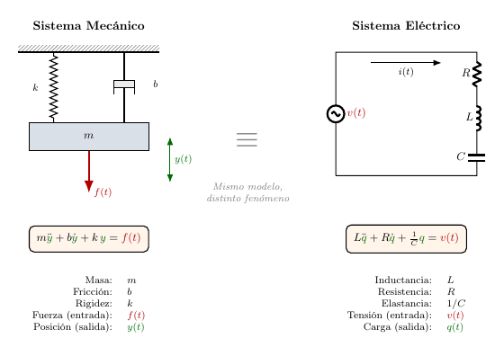
fig_analogia§1.1
Analogía entre un sistema mecánico y uno eléctrico. Ambos se describen con la misma ecuación diferencial. Resolver uno equivale a resolver el otro, a pesar de que los fenómenos físicos son completamente distintos.
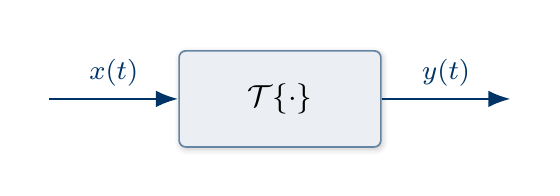
fig_bloque_simple§1.1
Representación en diagrama de bloques de un sistema con una entrada y una salida. La señal de entrada $x(t)$ ingresa al bloque que realiza la transformación $\mathcal{T}\{\cdot\}$, y la señal resultante $y(t)$ emerge por la salida.
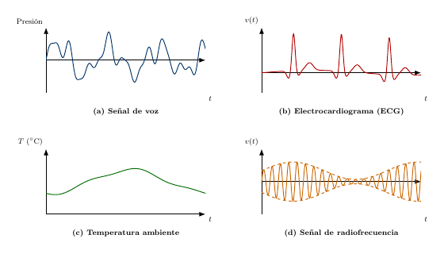
fig_ejemplos_senales§1.1
Señales en la vida cotidiana. A pesar de provenir de fenómenos completamente distintos, todas comparten una misma estructura: son magnitudes físicas que cambian con el tiempo y transportan información.
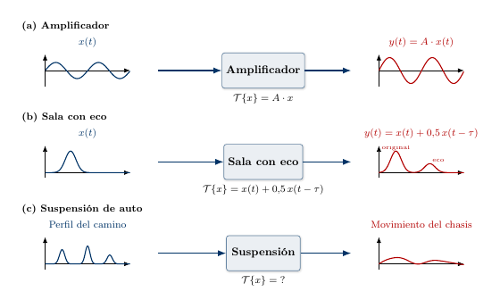
fig_ejemplos_sistemas§1.1
Tres ejemplos de sistemas. (a) El amplificador escala la señal. (b) La sala con eco suma una copia retardada. (c) La suspensión suaviza las vibraciones. Cada bloque muestra su transformación $\mathcal{T}\{\cdot\}$ específica.
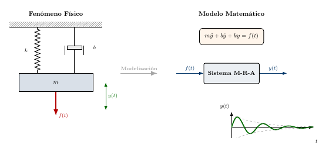
fig_modelo_masa_resorte§1.1
Del fenómeno al modelo. A la izquierda, el sistema masa-resorte-amortiguador real. A la derecha, su representación matemática: una ecuación diferencial, un diagrama de bloques simplificado y la predicción del comportamiento temporal.
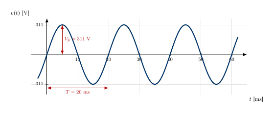
fig_senal_continua§1.1
Señal continua: tensión de la red eléctrica domiciliaria. La curva está definida para todo instante $t$, sin saltos ni interrupciones.
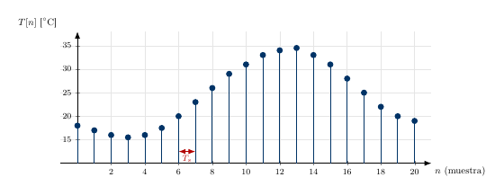
fig_senal_discreta§1.1
Señal discreta: muestras de temperatura tomadas en intervalos regulares ($T_s$). Cada punto representa una única medición. Entre muestras, la señal no está definida.
50 figuras
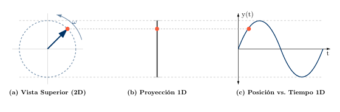
fig_carrusel§2.1
La conexión rotación-oscilación. El movimiento circular uniforme (a) se percibe como una oscilación lineal al observarlo de perfil (b). La gráfica temporal de esa proyección (c) es la forma de onda senoidal.
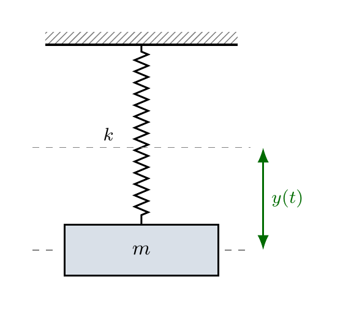
fig_resorte§2.1
Sistema masa-resorte. Aunque el movimiento es estrictamente vertical (1D), puede modelarse como la proyección de un vector giratorio auxiliar en el plano complejo.
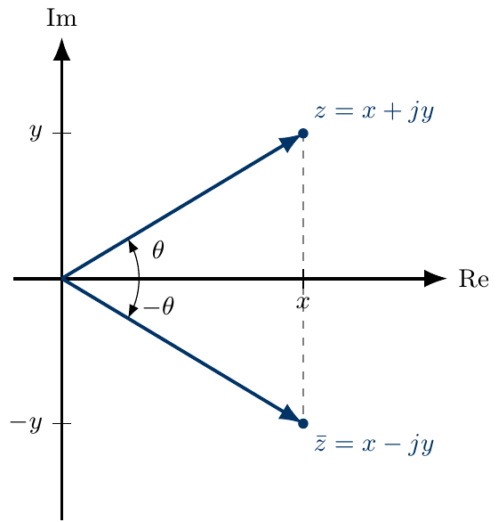
fig_conjugado§2.2
El conjugado complejo $\bar{z}$ actúa como un espejo respecto al eje real. Al reflejar el vector, su magnitud se mantiene constante pero su fase cambia de signo.
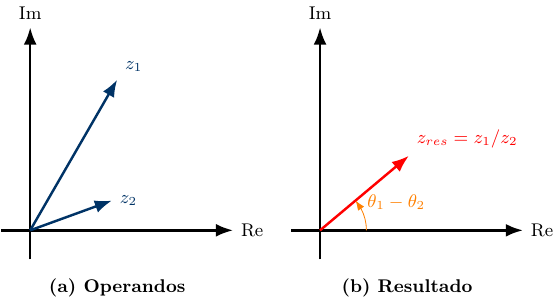
fig_division_compleja§2.2
La división es la operación inversa de la multiplicación: los módulos se dividen y las fases se restan.
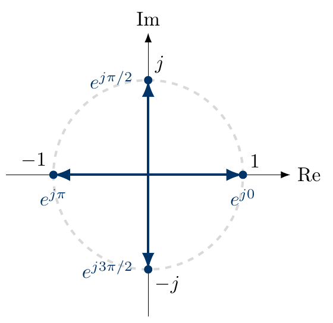
fig_ejemplos_rapidos§2.2
Los cuatro vectores unitarios fundamentales. Cualquier número sobre los ejes es un múltiplo escalar de uno de estos cuatro vectores base.
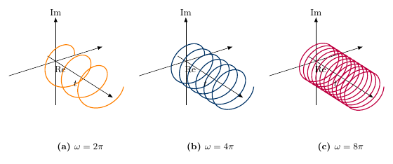
fig_espirales_omega§2.2
Efecto de la frecuencia $\omega$. (a) $\omega = 2\pi$: Giros lentos. (b) $\omega = 4\pi$: Frecuencia media. (c) $\omega = 8\pi$: Giros rápidos y espiral compacta.
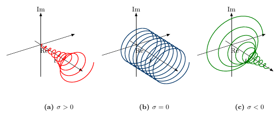
fig_espirales_sigma§2.2
Trayectorias completas 3D. (a) $\sigma > 0$: Divergencia. (b) $\sigma = 0$: Hélice constante. (c) $\sigma < 0$: Convergencia hacia el origen.
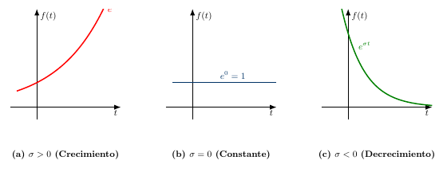
fig_exponencial_real§2.2
Evolución de la magnitud $e^{\sigma t}$. (a) $\sigma > 0$: el sistema gana energía infinitamente. (b) $\sigma = 0$: sistema conservativo. (c) $\sigma < 0$: el sistema disipa energía y tiende al reposo.
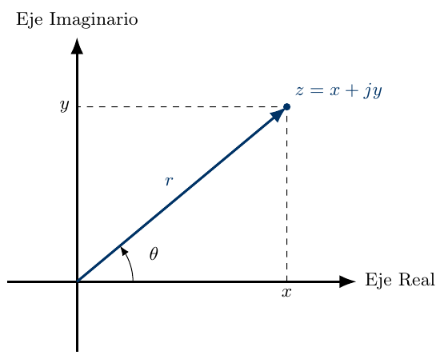
fig_plano_complejo§2.2
Representación geométrica de un número complejo $z$. En este plano, $z$ se define mediante dos componentes ortogonales e independientes.
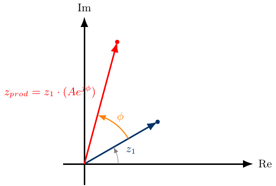
fig_prod_complejo§2.2
Multiplicar números complejos en forma polar es intuitivo: equivale a una rotación y un cambio de escala.
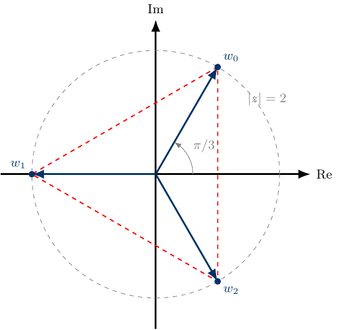
fig_raices_cubicas§2.2
Visualización de las raíces cúbicas de $-8$. Las soluciones forman un triángulo equilátero inscrito en el círculo de radio $|z|=2$, evidenciando la simetría rotacional de las raíces $n$-ésimas.
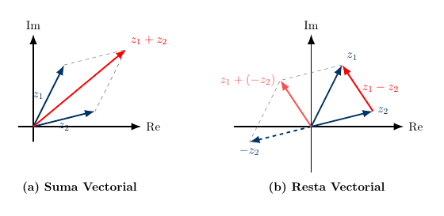
fig_suma_resta§2.2
Interpretación geométrica. (a) La suma representa superposición o acumulación. (b) La resta tiene doble interpretación: como distancia relativa (vector entre puntas) y como suma del opuesto (construcción auxiliar).
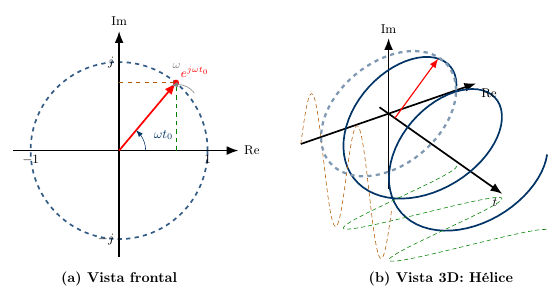
fig_vector_giratorio§2.2
El vector giratorio $e^{j\omega t}$. (a) Vista frontal del plano complejo (tiempo perpendicular a la hoja). (b) Vista 3D: al agregar el eje temporal, la trayectoria forma una hélice cuyas proyecciones son las funciones seno y coseno.
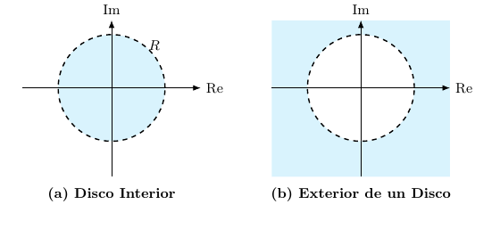
fig_discos§2.3
Las condiciones sobre el módulo definen regiones circulares. (a) $|z| < 3$: Interior del disco. (b) $|z| > 3$: Exterior del disco. En ambos casos se utiliza trazo discontinuo (desigualdades estrictas).
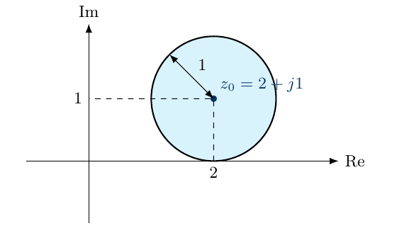
fig_discos_desplazados§2.3
Un disco desplazado definido por $|z - (2 + j1)| \le 1$. La condición describe una vecindad cerrada centrada en $(2,1)$. Se utiliza trazo continuo porque la desigualdad ($\le$) incluye a los puntos de la frontera.
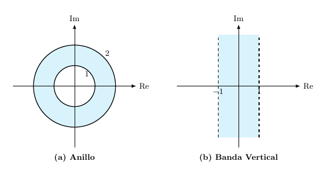
fig_regiones_combinadas§2.3
Intersección de condiciones. (a) Anillo cerrado: $1 \le |z| \le 2$ (trazo continuo). (b) Banda vertical abierta: $-1 < Re\{z\} < 1$ (trazo discontinuo).
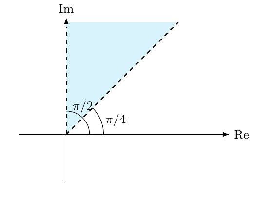
fig_sectores_angulares§2.3
Sector angular definido por $\pi/4 < Arg(z) < \pi/2$. Se utiliza trazo discontinuo en los rayos frontera porque la condición es estricta, excluyendo los ángulos límite.
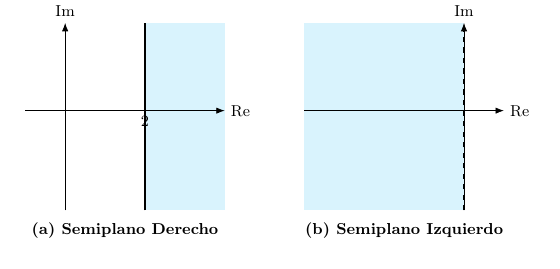
fig_semiplanos§2.3
Las condiciones sobre la parte real definen semiplanos verticales. (a) $Re\{z\} \ge 2$: Se usa trazo continuo porque la desigualdad incluye la igualdad. (b) $Re\{z\} < 0$: Se usa trazo discontinuo porque la desigualdad es estricta, excluyendo la frontera.
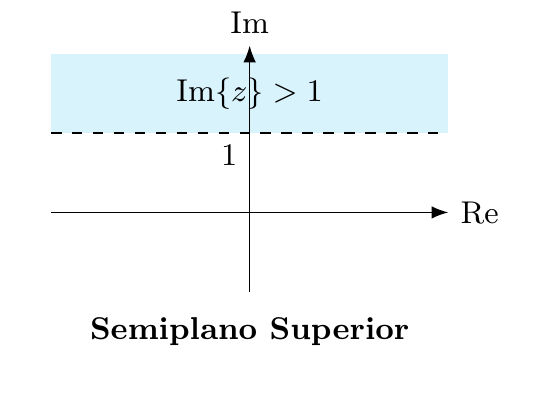
fig_semiplanos_horizontales§2.3
Semiplano horizontal definido por $Im\{z\} > 1$. La región válida es la superior (trazo discontinuo por desigualdad estricta).
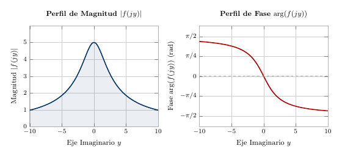
fig_cortes_2d§2.4
Perfiles de magnitud y fase obtenidos al evaluar $f(z) = \frac{10}{z+2}$ sobre el eje imaginario ($z = jy$, con $y \in [-5, 5]$). Izquierda: El perfil de magnitud $|f(jy)|$ muestra un máximo en $y = 0$ (el punto más cercano al polo en $z = -2$) y decae simétricamente hacia valores menores a medida que $|y|$ aumenta. Este perfil es la ``silueta'' que se obtendría al cortar la superficie 3D de la Figura con un plano vertical sobre el eje imaginario. Derecha: El perfil de fase $\angle f(jy)$ varía desde $+\pi/2$ (para $y \to -\infty$) hasta $-\pi/2$ (para $y \to +\infty$), pasando por cero cuando $y = 0$. La transición es suave y asintótica, reflejando cómo el vector $f(jy)$ rota progresivamente a medida que recorremos el eje imaginario.
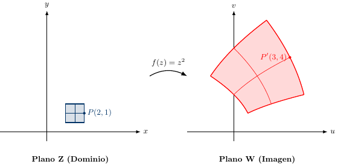
fig_mapeo_general§2.4
Visualización por mapeo. En lugar de una gráfica 4D, observamos cómo una región del plano Z (dominio) es transportada y deformada hacia el plano W (imagen).
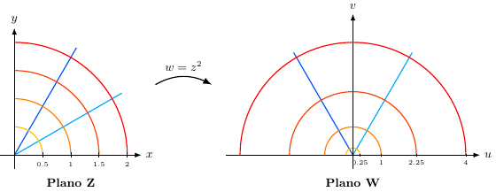
fig_mapeo_polar§2.4
Mapeo de una rejilla polar bajo $w=z^2$. Los círculos concéntricos se expanden cuadráticamente y los rayos duplican su ángulo. Obsérvese que el Plano Z se muestra con un zoom $\times 2$ respecto al Plano W para mejorar la visibilidad de la grilla de entrada.
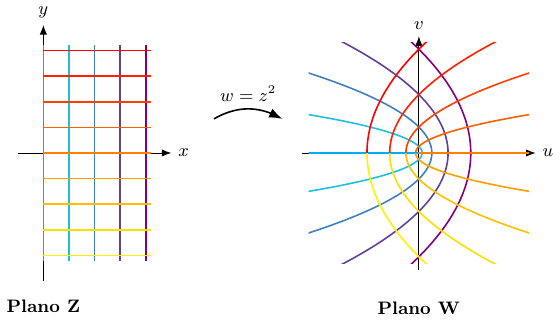
fig_mapeo_rejilla§2.4
Deformación de una rejilla cartesiana bajo $w=z^2$. Al graficar el Semiplano Derecho (cuadrantes 1 y 4), el mapeo es inyectivo y cubre todo el plano W sin solapamientos. Las líneas verticales se abren hacia la izquierda y las horizontales hacia la derecha.
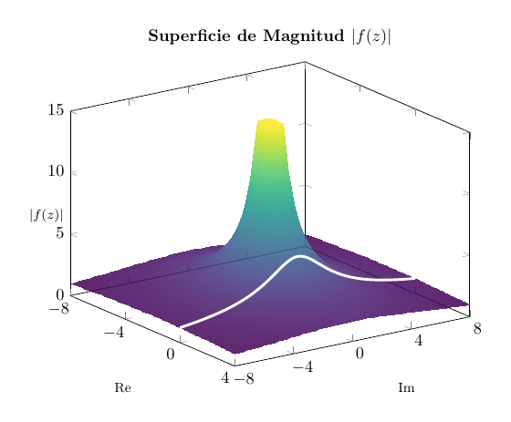
fig_superficie_magnitud§2.4
Superficie de magnitud $|f(z)|$ para la función $f(z) = \frac{10}{z+2}$. El punto $z = -2$ es un punto singular donde la función no está definida y la magnitud tiende a infinito, generando un pico que eleva la superficie. La línea resaltada sobre el eje imaginario indica el corte que produce los perfiles 2D de la Figura.
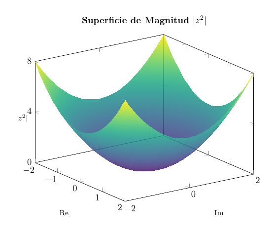
fig_superficies_z2§2.4
Superficie de magnitud $|z^2| = x^2 + y^2$ para la función $f(z) = z^2$. La superficie tiene forma de paraboloide de revolución, centrado en el origen, donde la función se anula y la altura es cero.
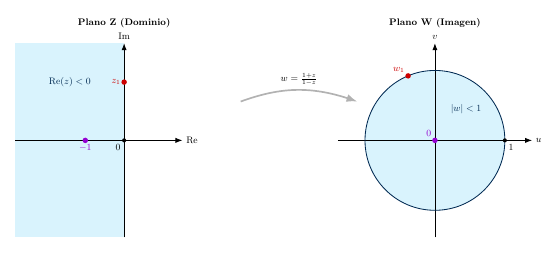
fig_bilineal§2.5
Transformación Bilineal. Ilustración del mapeo $w = \frac{1+z}{1-z}$. (a) En el dominio original (Plano $Z$), sombreamos el semiplano izquierdo ($Re\{z\}<0$), una región infinita que representa sistemas estables. (b) La transformación comprime todo ese espacio infinito dentro del disco unitario finito ($|w|<1$) en el plano imagen (Plano $W$). Note cómo el eje imaginario infinito se mapea exactamente sobre la circunferencia unitaria.
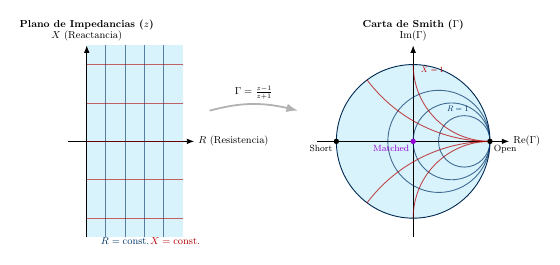
fig_carta_smith§2.5
La Carta de Smith como aplicación del mapeo conforme. (a) Plano Original: Los ingenieros trabajaban con números complejos en un semiplano infinito. Las líneas azules verticales y rojas horizontales formaban una cuadrícula de referencia. (b) Carta de Smith: La transformación bilineal comprime todo ese espacio infinito en un disco finito. Las líneas rectas se convierten en círculos (azul) y arcos (rojo), pero las intersecciones perpendiculares se preservan. Note los tres puntos característicos marcados: el centro representa la condición ideal, mientras que los extremos izquierdo y derecho del círculo representan casos límite del sistema.
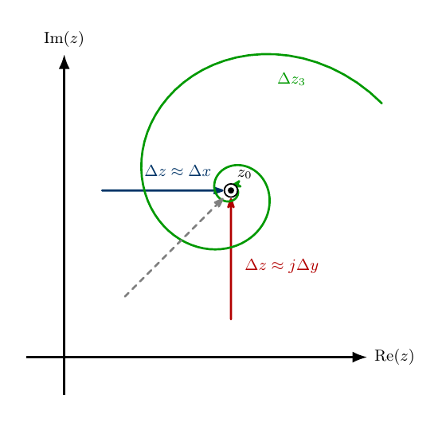
fig_derivada_trayectorias§2.5
Criterio de exigencia para la derivada compleja. Para que el límite exista, su valor debe ser unificado e idéntico sin importar la trayectoria de acercamiento al punto $z_0$. En la figura se observan trayectorias típicas como la horizontal ($\Delta z_1$), la vertical ($\Delta z_2$) o una espiral ($\Delta z_3$), pero la condición se extiende a cualquier ruta arbitraria concebible.
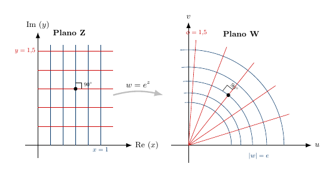
fig_mapeo_conforme§2.5
Propiedad de Mapeo Conforme. Ejemplo con $f(z)=e^z$. Aunque la función deforma rectángulos convirtiéndolos en sectores circulares, las intersecciones ortogonales de la rejilla original se preservan perfectamente en la imagen.
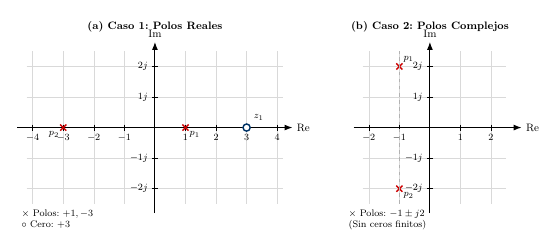
fig_diagrama_pz§2.6
Diagramas de Polos y Ceros para los ejemplos. (a) $H_1(z)$: un cero en $+3$ y polos en $+1$ y $-3$, todos sobre el eje real. (b) $H_2(z)$: polos complejos conjugados en $-1 \pm j2$, sin ceros finitos.
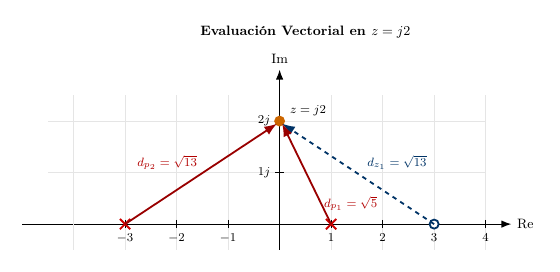
fig_evaluacion_vectorial§2.6
Evaluación gráfica de $H_1(j2)$. Los vectores van desde cada singularidad hasta el punto de evaluación $z = j2$. La magnitud resulta del cociente de distancias; la fase, de la suma/resta de ángulos.
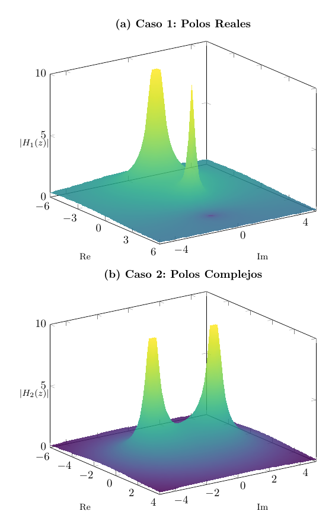
fig_topografia_polos_ceros§2.6
Superficies de magnitud $|H(z)|$ para los ejemplos. (a) $H_1(z)$: picos en los polos reales ($+1$, $-3$) y un valle en el cero ($+3$). (b) $H_2(z)$: picos en los polos complejos ($-1 \pm j2$), simétricos respecto al eje real.
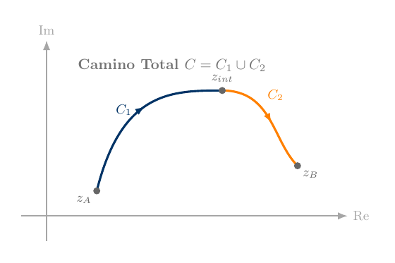
fig_aditividad_contornos§2.7
Propiedad de aditividad. Un contorno total $C$ que une $z_A$ y $z_B$ puede particionarse en dos segmentos $C_1$ y $C_2$ conectados en un punto intermedio $z_{int}$. La integral de línea a lo largo de $C$ es la suma de las integrales a lo largo de $C_1$ y $C_2$.
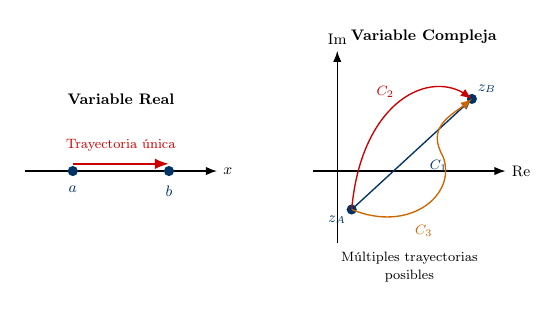
fig_caminos_integracion§2.7
Contraste topológico entre la integración en variable real y compleja. Izquierda: En la recta real, dados dos puntos $a$ y $b$, existe una única trayectoria posible (el segmento que los une). Derecha: En el plano complejo, dados dos puntos $z_A$ y $z_B$, existen infinitas trayectorias posibles ($C_1$, $C_2$, $C_3$, etc.). Por esta razón, la integral compleja debe especificar siempre el contorno $C$ sobre el cual se realiza la acumulación.
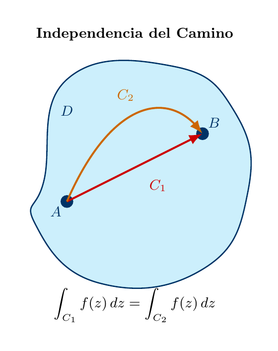
fig_consecuencias_cauchy§2.7
Consecuencia del Teorema de Cauchy. Si $f(z)$ es analítica en la región, entonces $\int_{C_1} f(z)\,dz = \int_{C_2} f(z)\,dz$ para cualquier par de caminos que conecten $A$ con $B$: el valor de la integral no depende de la trayectoria elegida, sino únicamente de los puntos extremos.
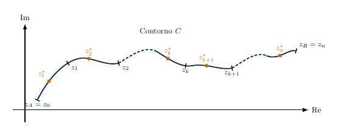
fig_definicion_integral§2.7
Construcción de la integral de línea. El contorno $C$ se divide en segmentos pequeños $\Delta z_k$. En cada segmento se elige un punto de evaluación $z^*_k$ (en naranja). La integral es el límite de la suma $\sum f(z^*_k) \Delta z_k$ cuando los segmentos se hacen infinitamente pequeños.
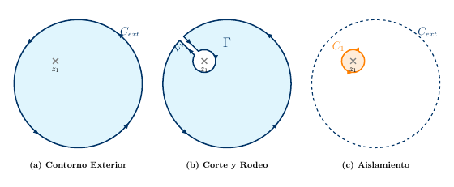
fig_deformacion_simple§2.7
Deformación de contornos para una única singularidad. (a) Contorno exterior $C_{ext}$ rodeando una singularidad aislada en $z_1$. (b) Introducción de los segmentos de corte $L_1$ y $-L_1$ que conectan $C_{ext}$ con el contorno interno $-C_1$, transformando el dominio en una región analítica sobre la que se aplica el Teorema de Cauchy. (c) Tras la cancelación de los segmentos de corte, la integral sobre $C_{ext}$ resulta igual a la integral sobre $C_1$, ambos recorridos en sentido antihorario.
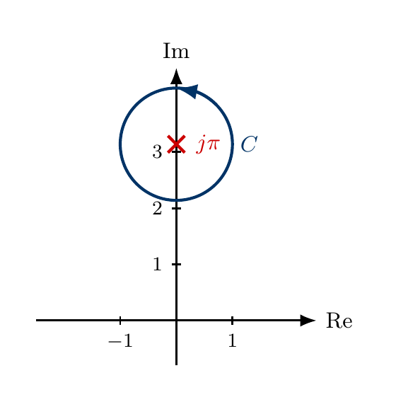
fig_ejemplo_cauchy§2.7
Aplicación de la Fórmula Integral de Cauchy. La trayectoria cerrada $C$ encierra un único polo simple (marcado con $\times$) ubicado en $z_0 = j\pi$. Al evaluar la función analítica del numerador ($f(z) = e^z$) en dicha singularidad, se determina directamente el resultado numérico total de la integral.
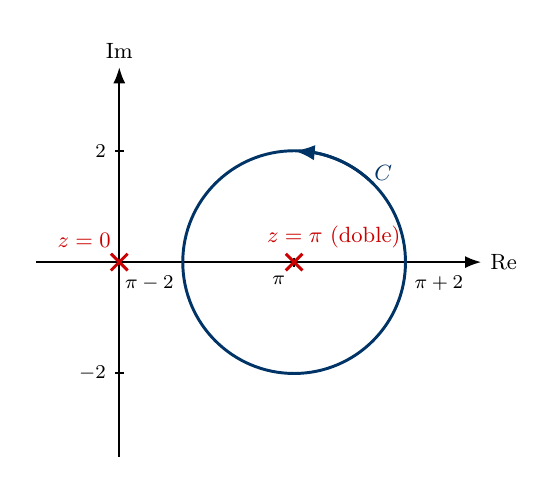
fig_ejemplo_derivadas§2.7
Solución de la integral compleja mediante derivada. La circunferencia $C$ definida por $|z-\pi|=2$ encierra al polo doble en su centro $z=\pi$ y deja fuera al polo simple ubicado en el origen.
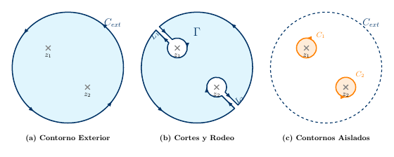
fig_multiplemente_conexos§2.7
Generalización del Teorema integral de Cauchy para dominios múltiplemente conexos con múltiples singularidades. (a) El contorno $C_{ext}$ rodea varias singularidades. (b) Se introducen cortes $L_1, L_2$ para generar un dominio analítico unificado. (c) Reducción del sistema a la evaluación directa sobre cada uno de los contornos aislados $C_1$ y $C_2$.
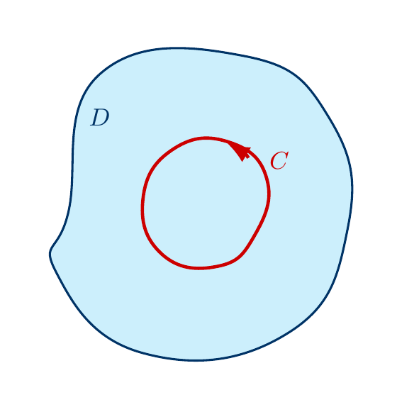
fig_teorema_cauchy§2.7
Visualización del Teorema de Cauchy. Un dominio simplemente conexo $D$ contiene un contorno cerrado $C$ recorrido en sentido antihorario. Si $f(z)$ es analítica en todo $D$, entonces $\oint_C f(z)\,dz = 0$.
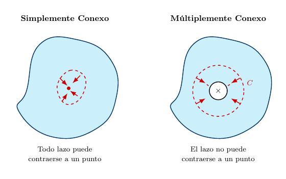
fig_tipos_dominios§2.7
Clasificación topológica de regiones. Izquierda (Simplemente Conexo): Una región sin puntos excluidos; las flechas muestran cómo el lazo se contrae hacia el centro hasta reducirse a un punto. Derecha (Múltiplemente Conexo): Una región con una singularidad (marcada con $\times$); las flechas muestran el intento de contracción, pero el obstáculo impide que el lazo $C$ llegue a un punto.
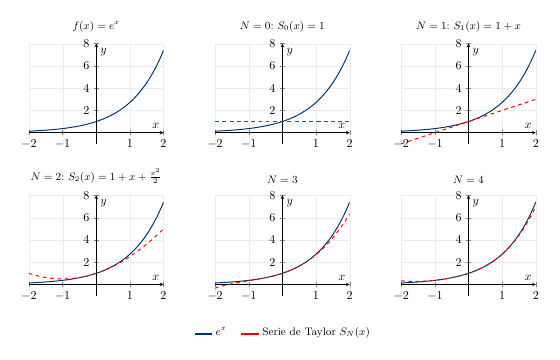
aprox_taylor§2.8
Visualización en variable real ($x \in \mathbb{R}$) de las sumas parciales de la Serie de Taylor para evaluar $f(x)=e^x$. A medida que agregamos más términos de potencia ($N$), el polinomio aproxima fielmente a la exponencial real original extendiéndose por un intervalo mayor.
fig_regiones_convergencia§2.8
Función $f(z) = \frac{1}{(1-z)(2-z)}$ y sus tres regiones de convergencia, con polos en $z=1$ y $z=2$. (a) Función original completa: $|f(z)|$ definida en todo el plano salvo en los polos. (b) Serie de Taylor (infinitos términos): converge en el disco $|z|<1$ (radio igual a la distancia al polo más cercano). (c) Primera serie de Laurent (infinitos términos): converge en la corona $1 < |z| < 2$ (anillo entre los dos polos). (d) Segunda serie de Laurent (infinitos términos): converge en el exterior $|z|>2$ (más allá del polo lejano). La misma función admite tres representaciones en serie distintas, cada una válida en su región.
fig_roc_laurent§2.8
Regiones de convergencia para $f(z) = \frac{1}{(1-z)(2-z)}$ en el plano complejo (región sombreada). Los polos en $z=1$ y $z=2$ (marcados con $\times$) actúan como fronteras. (a) Serie de Taylor: disco $|z|<1$, válida cerca del origen. (b) Primera serie de Laurent: corona $1<|z|<2$, entre los dos polos. (c) Segunda serie de Laurent: corona $2<|z|<\infty$, más allá del polo lejano.
fig_roc_taylor§2.8
Disco de convergencia de la serie de Taylor de $f(z)=1/(1-z)$ centrada en $z_0=0$ (región sombreada). El polo en $z=1$ (marcado con $\times$) determina el radio $R=1$; la serie es válida en el interior del disco.
fig_serie_geometrica§2.8
Visualización de la serie geométrica. (a) Para $z_1 = 0.75 e^{j50°}$ ($|z_1|<1$), la suma de vectores forma una espiral que converge hacia el valor estable $\frac{1}{1-z_1}$ (en naranja). (b) Para $z_2 = 1.12 e^{j25°}$ ($|z_2|>1$), la suma se aleja indefinidamente del origen ($\to \infty$). (c) La Región de Convergencia (ROC) es el interior del disco unitario; la frontera $|z|=1$ es discontinua para indicar que no pertenece al dominio de convergencia. Nótese que las escalas en los tres paneles han sido ajustadas individualmente para maximizar la legibilidad de cada fenómeno.
taylor_complejo§2.8
Representación en 3D de la convergencia en el plano complejo. (a) Magnitud exacta de $f(z)=1/(1-z)$, con el polo en $z=1$ que diverge al infinito. (b) Superficie obtenida sumando infinitos términos de la Serie de Taylor centrada en el origen: coincide con la función dentro del disco de convergencia $|z|<1$ (radio igual a la distancia al polo), y diverge fuera de él.
taylor_vs_laurent§2.8
Comparación de las regiones de convergencia (series de infinitos términos). (a) La Serie de Taylor converge dentro de un disco completo ($|z|<1$); la singularidad en $z=1$ define el radio. (b) La Serie de Laurent converge en una corona anular o en el exterior de un disco ($|z|>1$), representando correctamente la función en regiones que incluyen las inmediaciones de los polos.
fig_semicirculo§2.9
Contorno semicircular $C = C_R \cup \Gamma_R$ para el cálculo de $I = \int_{-\infty}^\infty dx/(1+x^2)$. El polo $z_k = j$ (semiplano superior, $\times$) queda encerrado y contribuye con su residuo; el polo conjugado $\bar{z}_k = -j$ (semiplano inferior, $\times$ difuminado) queda fuera del contorno y no contribuye. Al tomar $R \to \infty$, la integral sobre $\Gamma_R$ tiende a cero y la integral real $I$ queda determinada únicamente por los residuos del semiplano superior.
26 figuras
fig_causal§3.1
Clasificación de señales según su soporte temporal. Fondo azulado: casos especiales causal ($T_1=0$) y anticausal ($T_2=0$). Fila 1 --- derechas, soporte $[T_1,+\infty)$: $T_1<0$ (no causal), $T_1=0$ (causal), $T_1>0$ (causal). Fila 2 --- izquierdas, soporte $(-\infty,T_2]$: $T_2>0$ (no causal ni anticausal), $T_2=0$ (anticausal), $T_2<0$ (anticausal). Fila 3: bilateral (no nula en todo $\mathbb{R}$) y soporte finito $[T_1,T_2]$ con $T_1<0<T_2$ (no causal).
fig_integral_paridad§3.1
Interpretación geométrica de las integrales sobre intervalos simétricos. (Izq.) Señal impar: las áreas a ambos lados del origen son iguales en magnitud y de signo opuesto, y se cancelan. (Der.) Señal par: ambas mitades contribuyen con la misma área; la integral total es el doble de la integral sobre $[0,\,T]$.
fig_par_impar§3.1
Descomposición de (a) $x(t) = e^{t}$ en su componente par (b) $x_p(t) = \cosh(t)$ y su componente impar (c) $x_i(t) = \sinh(t)$. El coseno hiperbólico es simétrico respecto al origen; el seno hiperbólico es antisimétrico y vale cero en $t = 0$.
fig_periodica§3.1
Señal periódica $x(t) = \sin(\pi t) + 0{,}4\sin(3\pi t)$ con período fundamental $T_0 = 2\,$s. La flecha inferior marca $T_0$; la flecha gris muestra que $2T_0$ también satisface la condición de periodicidad, pero no es el período fundamental porque existe uno menor. Los puntos y la anotación $x(t_0) = x(t_0+T_0)$ ilustran que la condición \eqref{eq:periodicidad} debe cumplirse para todo $t_0 \in \mathbb{R}$. La señal se extiende indefinidamente en ambas direcciones (tramos punteados).
fig_senal_real§3.1
Ejemplos de señal real y señal compleja. (a) Señal real $x(t) = e^{-t/2}\cos(2\pi t)$: coseno amortiguado; sus valores pertenecen a $\mathbb{R}$ para todo $t$. (b) Señal compleja $x(t) = e^{(-0{.}3+j2\pi)t}=e^{-0.3t}\cos(2\pi t)+j e^{-0.3t}\sin(2\pi t)$: exponencial compleja con $\sigma=-0.3<0$ y $\omega=2\pi$ rad/s, representada como espiral en el espacio $(t,\,\operatorname{Re}\{x\},\,\operatorname{Im}\{x\})$; el radio decrece con el tiempo por el factor $e^{-0{.}3\,t}$.
fig_soporte§3.1
Señales clasificadas según su soporte. (a) Señal derecha: su soporte comienza en $T_1$, por lo que es nula para $t < T_1$. (b) Señal izquierda: su soporte termina en $T_2$, por lo que es nula para $t > T_2$. (c) Señal bilateral: es no nula en todo el eje real, sin límites finitos.
fig_bloques_amplitud§3.2
Diagramas en bloques de las operaciones en amplitud. (a) Escalado: bloque triangular de ganancia $\alpha$. (b) Suma: unión circular con cruz diagonal; el sector de cada entrada indica su signo ($+$). (c) Diferencia: misma unión con signo $-$ en el sector de $x_2$; no se necesita bloque negador explícito. (d) Producto: unión circular con $\times$ interior. (e) Derivada: bloque rectangular con $d/dt$. (f) Integral: bloque rectangular con $\int$.
fig_desplazamiento§3.2
Desplazamiento temporal de un pulso rectangular. (a) Señal original $x(t)$, activa en $[0,2]$. (b) Retardo $y(t)=x(t-3)$: el pulso se desplaza a $[3,5]$. (c) Adelanto $z(t)=x(t+1)$: el pulso se desplaza a $[-1,1]$.
fig_energia_potencia§3.2
Clasificación energética de tres señales. (a) Exponencial bilateral $e^{-a|t|}$: señal de energía ($E_x = 1/a$, $P_x = 0$). (b) Sinusoide: señal de potencia ($P_x = A^2/2$, $E_x = \infty$). (c) Exponencial creciente $e^{at}$: ni de energía ni de potencia ($E_x = P_x = \infty$).
fig_escalado§3.2
Escalado temporal de un pulso triangular de soporte $[0,2]$ y pico en $t=1$. (a) Señal original $x(t)$. (b) Compresión $y(t)=x(2t)$: soporte $[0,1]$, pico en $t=1/2$. (c) Expansión $z(t)=x(t/2)$: soporte $[0,4]$, pico en $t=2$.
fig_rebatimiento§3.2
Rebatimiento del pulso triangular. (a) Señal original $x(t)$: soporte $[0,2]$, pico en $t=1$. (b) Señal rebatida $x(-t)$: soporte $[-2,0]$, pico en $t=-1$.
fig_transformaciones§3.2
Obtención de $y(t) = x(-2t+3)$ a partir del pulso triangular $x(t)$. (a) Señal original, soporte $[0,2]$, pico en $t=1$. (b) Compresión y reflexión $x(-2t)$: soporte $[-1,0]$, pico en $t=-1/2$. (c) Desplazamiento $x(-2t+3) = x\!\left(-2\!\left(t-\tfrac{3}{2}\right)\right)$: soporte $[1/2,\,3/2]$, pico en $t=1$.
fig_valor_medio§3.2
Descomposición de una señal en sus componentes DC y AC. (a) Señal original $x(t)$; la línea discontinua indica el valor medio $\bar{x}$. (b) Componente alterna $x_{ac}(t) = x(t) - \bar{x}$, que oscila en torno a cero.
fig_activacion§3.3
Activación de $x(t) = \cos(\pi t)$ en $t_0 = 1$. (a) Señal original definida para todo $t$. (b) Escalón desplazado $u(t-t_0)$: vale 0 antes de $t_0$ y 1 después. (c) Señal activada $y(t) = \cos(\pi t)\,u(t-t_0)$: nula para $t < t_0$, coincidente con $x(t)$ para $t \geq t_0$. El valor de arranque $y(t_0) = \cos(\pi t_0) = -1$ (círculo relleno) corresponde al valor de la sinusoide en ese instante; el círculo vacío en 0 indica que ese límite lateral izquierdo no se alcanza.
fig_approx_pulsos§3.3
Aproximación de $x(t)$ como suma de pulsos rectangulares $\delta_{\Delta}(t - k\Delta)\cdot x(k\Delta)\,\Delta$: cada pulso tiene ancho $\Delta$, está centrado en $k\Delta$ y aporta un área $x(k\Delta)\,\Delta$.
fig_exponencial§3.3
Exponencial compleja de frecuencia pura $e^{j(\omega_0 t+\varphi)}$ con $\varphi = \pi/6$ ($30^\circ$). (a) Posición del vector giratorio en $t = 0$: el punto $e^{j\varphi}$ está a un ángulo $\varphi$ (arco naranja) del eje real. (b) Parte real $\cos(\omega_0 t+\varphi)$ (sólida) y parte imaginaria $\sin(\omega_0 t+\varphi)$ (discontinua); los puntos en $t = 0$ muestran los valores de arranque $\cos(\pi/6)$ y $\sin(\pi/6)$, que coinciden con las coordenadas del vector giratorio en el panel (a).
fig_impulso§3.3
Construcción del impulso de Dirac como límite de pulsos rectangulares. El pulso $\delta_{\Delta}(t)$ tiene base $\Delta$ y altura $1/\Delta$, con área constante igual a $1$. Al tomar el límite $\Delta \to 0$, la base tiende a cero y la altura a infinito, conservando el área unitaria. El resultado es $\delta(t)$, representado gráficamente como una flecha de altura 1 (igual al área).
fig_rampa§3.3
(a) Escalón unitario $u(t)$ y (b) rampa unitaria $r(t)=t\,u(t)$. La pendiente de la rampa en $t \geq 0$ es unitaria.
fig_sinusoidal§3.3
Señal sinusoidal $A\cos(\omega_0 t + \varphi)$: amplitud $A$, período $T_0$ y efecto de la fase $\varphi$ sobre el desplazamiento temporal.
fig_tren_impulsos§3.3
Tren de impulsos periódico $\delta^{T_0}(t)$: impulsos unitarios en $t = k\,T_0$ para $k \in \mathbb{Z}$.
fig_cuadrada§3.4
Señal pulsante periódica de período $T_0$, amplitud $A$ y ciclo de trabajo $D = \tau/T_0 = 0{,}4$.
fig_diente_sierra§3.4
Señal diente de sierra de período $T_0$ y amplitud $A$.
fig_pulso§3.4
Pulso rectangular centrado $p_{\tau}(t)$ de duración $\tau$ (panel izquierdo) y pulso causal $p_{\tau}(t-\tau/2)$ con soporte $[0,\tau]$ (panel derecho). Ambos trazados corresponden a $\tau = 2$.
fig_sinc§3.4
Función seno cardinal $\operatorname{sinc}(t) = \sin(t)/t$. Los ceros se ubican en los múltiplos enteros no nulos de $\pi$; el lóbulo principal tiene ancho $2\pi$ y amplitud $1$.
fig_triangular§3.4
Señal triangular periódica de período $T_0$ y amplitud $A$. La señal es par, continua, con valor medio cero, y oscila simétricamente entre $-A$ y $+A$.
fig_variantes_triangular§3.4
Tres presentaciones de una misma forma, ilustradas con la señal triangular: (a) versión canónica, periódica y de media nula; (b) la misma forma con valor medio $A/2$ y desplazada en el tiempo; (c) un único período aislado.
21 figuras
fig_bibo§4.1
Estabilidad BIBO. Ante la entrada escalón $x(t) = u(t)$ acotada por $M_x = 1$ (izquierda), el sistema estable produce una salida contenida por una cota propia $M_y$ (centro), mientras que la salida del sistema inestable crece sin admitir cota finita alguna (derecha).
fig_invarianza_temporal§4.1
Verificación de invarianza temporal: Ruta 1 aplica el retardo antes del sistema; Ruta 2 lo aplica después. El sistema es IT si y solo si ambas rutas producen la misma salida.
fig_invertible§4.1
Sistema invertible: la cascada $\mathcal{T}^{-1}\circ\mathcal{T}$ recupera exactamente la entrada original.
fig_cascada§4.2
Interconexión en cascada. Izquierda: dos sistemas LIT conectados en serie. Derecha: el sistema equivalente con respuesta al impulso $h(t) = h_1(t) * h_2(t)$.
fig_paralelo§4.2
Interconexión en paralelo. Izquierda: los dos sistemas LIT con la misma entrada y salidas sumadas. Derecha: el sistema equivalente con respuesta al impulso $h(t) = h_1(t) + h_2(t)$.
fig_respuesta_impulso§4.2
Experimento de respuesta al impulso. La entrada $\delta(t)$ ---un estímulo ideal de duración infinitesimal y área unitaria--- se aplica al sistema LIT en reposo. La salida resultante $h(t)$ captura cómo el sistema reacciona ante una perturbación puntual.
fig_superposicion_impulsos§4.2
Superposición de dos respuestas al impulso. Filas (a) y (b): cada impulso produce, por separado, una copia escalada y desplazada de $h(t)$. Fila (c): la entrada suma produce la suma de respuestas; en la zona de superposición ($t \geq t_2$) el relleno azul y el rojo identifican el aporte de cada impulso a la salida total.
fig_conv_cinco_zonas§4.3
Procedimiento de invertir y desplazar para la convolución de dos pulsos rectangulares causales (con $a=1$, $b=2$). En azul, $x(\tau)$; en rojo, $h(t-\tau)$; en gris, la región de solapamiento, cuya área es $y(t)$. Zona I: $h(t-\tau)$ está enteramente a la izquierda de $x(\tau)$. Zona II: solapamiento parcial $[0, t]$, que crece linealmente con $t$. Zona III: $x(\tau)$ queda completamente cubierto por $h(t-\tau)$; el solapamiento abarca $[0, a]$. Zona IV: solapamiento $[t-b,\, a]$, que decrece linealmente. Zona V: $h(t-\tau)$ está enteramente a la derecha de $x(\tau)$.
fig_conv_dos_exp§4.3
Convolución de dos exponenciales causales con $a=1$, $b=2$. En azul, $x(\tau)$; en rojo, $h(t_0-\tau)$. (a) Zona I, $t_0 < 0$: el borde derecho de $h(t_0-\tau)$, ubicado en $\tau=t_0$, queda completamente a la izquierda del soporte de $x(\tau)$; entre las dos señales hay un hueco y no hay solapamiento. (b) Zona II, $t_0 \geq 0$: el borde derecho de $h(t_0-\tau)$ ya entró al soporte de $x(\tau)$ y las dos exponenciales se solapan sobre $[0, t_0]$ (gris); el área de esa región es $y(t_0)$. (c) Salida $y(t) = (e^{-at}-e^{-bt})/(b-a)\,u(t)$: nula en la Zona I, crece desde cero, alcanza un máximo en $t^{*} = \ln(b/a)/(b-a)$ y decae hacia cero en la Zona II.
fig_conv_resultado§4.3
Salida $y(t) = x(t)*h(t)$ con $T=2$, $a=1$. La salida sube suavemente mientras la entrada está activa (Zona II) y decae exponencialmente una vez apagada (Zona III). El valor pico $(1-e^{-aT})/a$ se alcanza en $t = T$.
fig_conv_trapecio§4.3
Resultado $y(t) = x(t) * h(t)$ con $a=1$, $b=2$. El resultado es un trapecio de duración total $a+b=3$, con meseta de amplitud $a=1$ y ancho $b-a=1$ y flancos lineales de duración $a=1$ cada uno. Si $a=b$, la meseta desaparece y el trapecio degenera en un triángulo isósceles.
fig_conv_zonas§4.3
Procedimiento de invertir y desplazar para $x(\tau)*h(\tau)$ (con $T=2$, $a=1$). En azul, $x(\tau)$; en rojo, $h(t_0-\tau)$. La región sombreada (gris) indica el solapamiento, cuya área es $y(t_0)$. Zona I: $h(t_0-\tau)$ está enteramente a la izquierda de $x(\tau)$; no hay solapamiento. Zona II: $h(t_0-\tau)$ se solapa parcialmente con $x(\tau)$ sobre $[0, t_0]$. Zona III: $x(\tau)$ queda enteramente cubierto por $h(t_0-\tau)$; el solapamiento abarca el soporte completo $[0, T]$.
fig_proc_inv_desp§4.3
Procedimiento de invertir y desplazar para $x(t) = e^{-t}u(t)$ y $h(t) = e^{-2t}u(t)$, evaluado en $t_0 = 1$. (a) Las dos señales como funciones de $\tau$: $x(\tau)$ en azul y $h(\tau)$ en rojo, ambas activas en $\tau \geq 0$. (b) Inversión: $h(-\tau)$ ocupa el semieje $\tau \leq 0$ y crece hacia el origen. (c) Desplazamiento: $h(t_0-\tau)$ traslada el origen de $h(-\tau)$ al punto $\tau=t_0$; el solapamiento con $x(\tau)$ ocurre sobre $[0, t_0]$. (d) Producto $x(\tau)\,h(t_0-\tau)$: el área sombreada (gris) sobre $[0, t_0]$ es $y(t_0)$.
fig_rampa_impulso§4.3
Convolución de una rampa con un impulso desplazado, para $a = 1$ y $t_0 = 2$. (a) Rampa $x(\tau)$ de soporte acotado $[0, a]$. (b) Impulso $\delta(\tau - t_0)$ ubicado en $\tau = t_0$. (c) Resultado $y(t) = x(t - t_0)$: la rampa trasladada en bloque al intervalo $[t_0,\, t_0 + a]$, sin cambio de forma ni de orientación.
fig_rampa_tren_setup§4.3
Convolución de una rampa con un tren de impulsos, para $a = 1$ y $T_0 = 2$. (a) Rampa $x(\tau)$ de soporte acotado $[0, a]$. (b) Tren de impulsos $\delta^{T_0}(\tau)$ de período fundamental $T_0$. (c) Resultado $y(t) = x(t) * \delta^{T_0}(t)$: sucesión de copias inalteradas de la rampa, una en cada $kT_0$, separadas por tramos nulos de duración $T_0 - a$.
fig_causalidad_h§4.4
Causalidad en términos de la respuesta al impulso. (a) $h(t) = e^{-t}u(t)$: causal, ya que $h(t) = 0$ para $t < 0$. (b) $h(t) = e^{-|t|}$: no causal, ya que $h(t) \neq 0$ para $t < 0$.
fig_escalon_h§4.4
Relación entre la respuesta al escalón $g(t)$ y la respuesta al impulso $h(t)$ para el circuito $RC$ con $\tau_0 = RC = 1$. (a) $g(t) = (1-e^{-t})u(t)$: sube desde cero y se aproxima asintóticamente a $1$. (b) $h(t) = e^{-t}u(t) = g'(t)$: la derivada del escalón.
fig_auto_derivador§4.5
Realización directa con derivadores del vehículo $m\,\dot v + \beta\,v = F$. El derivador en el lazo de realimentación produce $\dot v$ a partir de $v$; la suma de $F/\beta$ y $-m\,\dot v/\beta$ entrega $v(t)$.
fig_oscilador_derivador§4.5
Realización directa con derivadores del oscilador $\ddot y + 2\dot y + 10\,y = x$. Dos derivadores en cascada producen $\dot y$ y $\ddot y$ a partir de $y$; las tres ramas se suman, escaladas por $1/10$, $-1/5$ y $-1/10$, para entregar $y(t)$.
fig_realizacion_general§4.5
Realización directa con derivadores de una EDLCC general de orden $N$ con derivadas de la entrada hasta orden $M$. Las cadenas de derivadores ocupan las columnas extremas; los escaladores $b_k/a_0$ y $-a_k/a_0$ se alinean en columnas paralelas y entregan sus contribuciones a la cadena central de sumadores. El último derivador de cada cadena se conecta al anterior con flecha discontinua para sintetizar los términos intermedios.
fig_rlc_derivador§4.5
Realización directa con derivadores del circuito RLC serie $LC\,\ddot v_C + RC\,\dot v_C + v_C = v_{in}$. Dos derivadores en cascada producen $\dot v_C$ y $\ddot v_C$ a partir de $v_C$; un sumador intermedio acumula las realimentaciones $-RC\,\dot v_C$ y $-LC\,\ddot v_C$, que el sumador superior reúne con $v_{in}$ para entregar $v_C(t)$.
17 figuras
fig_exponenciales_armonicas§5.1
Las seis primeras exponenciales armónicas $e^{jk\omega_0 t}$ trazadas como hélices sobre un período $T_0$, con $\omega_0 = 2\pi$ y $T_0 = 1$. Fila superior: $k > 0$ (rotación antihoraria). Fila inferior: $k < 0$ (rotación horaria, hélice espejada). El armónico de orden $k$ completa $|k|$ vueltas sobre $T_0$.
fig_proyeccion_R2§5.1
Proyección de un vector $\vect{v}$ sobre una base ortogonal $\{\vect{e}_1,\vect{e}_2\}$ en $\mathbb{R}^2$ (ortogonal, no unitaria). Cada proyección $\vect{v}_k$ se calcula de forma independiente: en la fórmula solo aparecen $\vect{v}$ y el correspondiente $\vect{e}_k$.
fig_diente_sierra§5.2
Diente de sierra de período $T_0 = 4$. La rampa sube de $0$ a $2$ dentro de cada período y vuelve a $0$ por el salto en los múltiplos enteros de $T_0$.
fig_espectro_pulso§5.2
Espectro de líneas del tren de pulsos rectangulares con $\tau = 1$, $T_0 = 4$. (a) Módulo $|c_k|$ con la envolvente sinc en línea punteada; los ceros aparecen en los múltiplos enteros de $T_0/\tau = 4$. (b) Fase $\angle c_k$, que alterna entre $0$ y $\pi$.
fig_espectro_sierra§5.2
Espectro de líneas del diente de sierra con $T_0 = 4$. (a) Módulo: $|c_0| = 1$ y $|c_k| = 1/(\pi|k|)$ para $k\neq 0$, con decaimiento $1/|k|$. (b) Fase: $0$ en $k=0$, $+\pi/2$ para los $k>0$ y $-\pi/2$ para los $k<0$.
fig_pulso_reconstruccion§5.2
Aproximación $\hat{x}_N(t) = \sum_{k=-N}^{N} c_k e^{jk\omega_0 t}$ del tren de pulsos rectangulares ($\tau = 1$, $T_0 = 4$). En cada panel, la señal original en azul y la aproximación truncada en rojo. (a) $N = 1$. (b) $N = 3$. (c) $N = 7$. (d) $N = 21$. Al aumentar $N$ la curva se acerca a la señal en los tramos constantes, pero el sobrepico junto a las discontinuidades no se atenúa.
fig_tren_pulsos§5.2
Tren periódico de pulsos rectangulares de período $T_0 = 4$ y ancho $\tau = 1$. La amplitud vale $1$ sobre la ventana centrada en cada múltiplo de $T_0$ y $0$ entre ventanas.
fig_vectores_pulso§5.2
Vectores giratorios $c_k\,e^{jk\omega_0 t}$ del tren de pulsos rectangulares con $\tau = 1$, $T_0 = 4$. Cada panel muestra la circunferencia de radio $|c_k|$ y el sentido de giro, con el orden $k$ del armónico marcado arriba. La fila superior corresponde a los $k$ positivos (giro antihorario) y la inferior a los negativos (giro horario). El armónico $k = \pm 4$ tiene módulo nulo porque $\operatorname{sinc}(\pi) = 0$.
fig_gibbs§5.3
Fenómeno de Gibbs en el tren de pulsos rectangulares. Cada panel muestra la aproximación truncada $\hat{x}_N$ (rojo) sobre la señal original (gris) y anota la altura del sobrepico medida junto al flanco descendente. (a) $N=5$, (b) $N=10$, (c) $N=20$, (d) $N=40$, (e) $N=80$, (f) $N=100$. La altura permanece cerca del 9% del tamaño del salto en los seis casos; lo único que cambia con $N$ es el ancho de la banda donde el sobrepico aparece.
fig_pares_conjugados§5.3
Suma de un par de vectores giratorios conjugados $c\,e^{j\omega_0 t}$ y $\bar{c}\,e^{-j\omega_0 t}$: imagen geométrica del par $(c_k, c_{-k})$ con $c_{-k} = \overline{c_k}$ en el caso $k=1$, idéntica para cualquier otro $k$. (a) Instantánea en el plano complejo en $t = T_0/8$, con el plano rotado $90^\circ$ para que el eje real quede vertical y comparta escala con el eje vertical del panel (b): los dos vectores tienen el mismo módulo, giran a la misma velocidad en sentidos opuestos y su suma (vector negro) cae sobre el eje real. (b) Suma $2|c|\cos(\omega_0 t)$ en el dominio del tiempo. La línea punteada conecta la punta del vector suma en (a) con el valor de la oscilación en (b) en ese mismo instante; la cancelación de las partes imaginarias es la imagen geométrica de la simetría conjugada $c_{-k} = \overline{c_k}$.
fig_aprox_trig_pulso§5.4
Aproximación trigonométrica del tren de pulsos rectangulares. Cada fila corresponde a un orden armónico $k = 1, 2, \dots, 5$. Columna izquierda: armónico individual $a_k\cos(k\omega_0 t)$ (rojo); en $k=4$ el armónico se anula porque $\operatorname{sinc}(\pi) = 0$. Columna derecha: suma parcial $\hat x_k(t) = a_0 + \sum_{m=1}^{k} a_m\cos(m\omega_0 t)$ (rojo) superpuesta a la señal original (azul). (a)(b) $k=1$; (c)(d) $k=2$; (e)(f) $k=3$; (g)(h) $k=4$; (i)(j) $k=5$.
fig_aprox_trig_sierra§5.4
Aproximación trigonométrica del diente de sierra. Cada fila corresponde a un orden armónico $k = 1, 2, \dots, 5$. Columna izquierda: armónico individual $b_k\sin(k\omega_0 t)$ (rojo). Columna derecha: suma parcial $\hat x_k(t) = a_0 + \sum_{m=1}^{k} b_m\sin(m\omega_0 t)$ (rojo) superpuesta a la señal original (azul). (a)(b) $k=1$; (c)(d) $k=2$; (e)(f) $k=3$; (g)(h) $k=4$; (i)(j) $k=5$.
fig_base_trigonometrica§5.4
Las primeras tres parejas de la base armónica trigonométrica $\{\cos(k\omega_0 t),\,\sin(k\omega_0 t)\}$ sobre un período. Fila superior, cosenos: (a) $\cos(\omega_0 t)$, (b) $\cos(2\omega_0 t)$, (c) $\cos(3\omega_0 t)$. Fila inferior, senos: (d) $\sin(\omega_0 t)$, (e) $\sin(2\omega_0 t)$, (f) $\sin(3\omega_0 t)$. La serie trigonométrica reescribe cualquier señal periódica real como combinación lineal de estas funciones, sus armónicos superiores, y la constante $a_0$.
fig_lit_vector_giratorio§5.5
Acción de un sistema LIT sobre una exponencial armónica $e^{j\omega t}$, vista en el plano complejo. La entrada (azul) es un vector giratorio de módulo $1$; la salida (rojo) es el mismo vector escalado por $|H(j\omega)|$ y rotado por $\angle H(j\omega)$. La velocidad angular $\omega$ se conserva: ambos vectores giran a la misma frecuencia, en el mismo sentido. La instantánea muestra un caso con $|H| < 1$ y $\angle H < 0$ (el sistema atenúa y retarda).
fig_pasabajos_ejemplo§5.5
Filtro pasabajos ideal de frecuencia de corte $\omega_c = 2\omega_0$ aplicado a la entrada $x(t) = 1 + 2\cos(\omega_0 t) + \cos(3\omega_0 t)$. (a) Entrada en el dominio del tiempo. (b) Salida $y(t) = 1 + 2\cos(\omega_0 t)$: la oscilación rápida del tercer armónico desapareció. (c) Máscara $|H(j\omega)|$ (gris) y espectro de la entrada sobre la grilla armónica. Los stems azules ($k = 0, \pm 1$) caen dentro de la banda pasante y sobreviven; los stems rojos punteados ($k = \pm 3$) caen fuera y se eliminan.
fig_respuesta_frecuencia§5.5
Respuesta en frecuencia del sistema con $h(t) = e^{-2t}\,u(t)$, dada por $H(j\omega) = 1/(2 + j\omega)$. (a) Módulo $|H(j\omega)| = 1/\sqrt{4+\omega^2}$. (b) Fase $\angle H(j\omega) = -\arctan(\omega/2)$. Los puntos azules marcan los valores en $\omega = 1$ y $\omega = 2$ usados en el ejemplo.
fig_rsp_ejemplo§5.5
Régimen sinusoidal permanente para el sistema $h(t) = e^{-2t}\,u(t)$ ante la entrada $x(t) = \cos t$. La entrada (azul) y la salida $y(t) \approx 0{,}447\cos(t - 0{,}4636)$ (rojo) tienen la misma frecuencia; lo que cambia es la amplitud y la fase inicial.
22 figuras
fig_lectura_modulo_fase§6.1
Lectura de una transformada de Fourier sobre la exponencial unilateral $x(t) = e^{-at}u(t)$ con $a > 0$. (a) La señal en el dominio del tiempo. (b) Espectro de amplitud $|X(j\omega)| = 1/\sqrt{a^2+\omega^2}$. (c) Espectro de fase $\angle X(j\omega) = -\arctan(\omega/a)$.
fig_limite_serie_a_tf§6.1
Espectro de líneas $c_k$ del tren de pulsos para tres valores crecientes de $T_0$, con $\tau$ fijo. Al aumentar $T_0$ la grilla armónica se densifica ($\omega_0 = 2\pi/T_0$ se reduce) y la altura de cada línea se aplasta (factor $\tau/T_0\to 0$).
fig_par_exp_unilateral§6.1
Par exponencial unilateral. (a) Señal $x(t) = e^{-at}u(t)$ con $a > 0$. (b) Amplitud $|X(j\omega)| = 1/\sqrt{a^2+\omega^2}$. (c) Fase $\angle X(j\omega) = -\arctan(\omega/a)$.
fig_par_impulso_constante§6.1
Par impulso--constante. Impulso $\delta(t)$ en el tiempo y su transformada $X(j\omega) = 1$, una constante en frecuencia.
fig_par_pulso_sinc§6.1
Par pulso rectangular--seno cardinal. (a) Pulso $p_\tau(t)$ de ancho $\tau$ centrado en cero. (b) Amplitud $|P_\tau(j\omega)| = \tau\,|\operatorname{sinc}(\omega\tau/2)|$. (c) Fase $\angle P_\tau(j\omega)$, igual a $0$ donde el seno cardinal es positivo y $\pi$ donde es negativo.
fig_tf_envolvente_invariante§6.1
Coeficientes reescalados $T_0\,c_k$ del tren de pulsos para tres valores crecientes de $T_0$. La envolvente $X_{env}(j\omega) = \tau\,\operatorname{sinc}(\omega\tau/2)$ (azul) es la misma en los tres paneles; las líneas rojas son los valores que toma sobre la grilla armónica $\{k\omega_0\}$, que se densifica al crecer $T_0$.
fig_tren_pulsos_limite§6.1
Tren periódico de pulsos rectangulares con ancho $\tau$ fijo y período $T_0$ creciente. El pulso de cada período se mantiene inalterado; lo único que cambia es la separación entre pulsos consecutivos.
fig_desplazamiento_fase_lineal§6.2
Efecto del desplazamiento temporal sobre el pulso. (a) Pulso centrado $p_\tau(t)$ y pulso desplazado $p_\tau(t-t_0)$. (b) Módulo del espectro $|\tau\,\operatorname{sinc}(\omega\tau/2)|$, idéntico para ambos. (c) Fase: la del pulso centrado es $0$ o $\pi$ (pasos en los ceros del seno cardinal); la del pulso desplazado, $0-\omega t_0$ o $\pi-\omega t_0 $.
fig_desplazamiento_frec§6.2
Desplazamiento en frecuencia ilustrado sobre un espectro genérico. (a) Módulo del espectro original $|X(j\omega)|$, centrado en cero. (b) Módulo del espectro de la señal modulada $e^{j\omega_0 t}\,x(t)$, idéntico en forma al de (a) pero trasladado en bloque hasta quedar centrado en $\omega_0$.
fig_dualidad_pulso_sinc§6.2
Dualidad ilustrada sobre el par pulso--seno cardinal. Arriba: par directo $p_\tau(t)\leftrightarrow \tau\,\operatorname{sinc}(\omega\tau/2)$. Abajo: par dual obtenido por la propiedad \eqref{eq:prop_dualidad}, donde el seno cardinal en el tiempo se transforma en un pulso en frecuencia (módulo $2\pi$). La forma de $X$ del par directo reaparece como señal temporal del par dual; la forma de $x$ reaparece como espectro.
fig_escalamiento_pulso§6.2
Escalamiento temporal sobre el pulso, ejemplo $a=2$. Arriba, la señal original; abajo, la versión acelerada. Izquierda, el dominio del tiempo; derecha, el dominio de la frecuencia. (a) Pulso original $p_\tau(t)$, ancho $\tau$. (b) Sinc original $\tau\,\operatorname{sinc}(\omega\tau/2)$, primer cero en $2\pi/\tau$ y altura central $\tau$. (c) Pulso acelerado $p_\tau(2t) = p_{\tau/2}(t)$, ancho $\tau/2$. (d) Sinc dilatada $(\tau/2)\,\operatorname{sinc}(\omega\tau/4)$, primer cero en $4\pi/\tau$ y altura central $\tau/2$. Comprimir en tiempo ensancha el espectro y atenúa su amplitud por el mismo factor.
fig_tf_escalon§6.2
TFTC extendida del escalón, $U(j\omega) = 1/(j\omega) + \pi\,\delta(\omega)$. (a) Parte real: el impulso de peso $\pi$ en $\omega = 0$, que carga con el valor medio $1/2$ de la señal. (b) Parte imaginaria: la hipérbola impar $-1/\omega$, que describe el salto.
fig_peine_dirac§6.3
Autodualidad del peine de Dirac. Tren de impulsos en el tiempo $\delta^{T_0}(t)$ con paso $T_0$, y su TFTC: tren de impulsos en frecuencia con paso $\omega_0 = 2\pi/T_0$ y peso uniforme $2\pi/T_0$.
fig_periodica_como_impulsos§6.3
Dos lecturas del mismo contenido espectral sobre un tren periódico de pulsos rectangulares. (a) Señal $x(t)$ en el tiempo. (b) Espectro de líneas $\{c_k\}$ sobre el índice discreto $k$. (c) TFTC $X(j\omega)$ como tren de impulsos ponderados sobre el eje continuo $\omega$, ubicados en $k\omega_0$ con peso $2\pi c_k$.
fig_tf_armonica§6.3
TFTC de la exponencial armónica $e^{j\omega_0 t}$: un único impulso real de peso $2\pi$ en $\omega = \omega_0$.
fig_tf_coseno_seno§6.3
Pares de transformadas de las dos sinusoides puras. (a) $\cos(\omega_0 t)$ y su TFTC: dos impulsos reales de peso $\pi$ en $\pm\omega_0$. (b) $\sin(\omega_0 t)$ y su TFTC: dos impulsos imaginarios puros, de pesos $-j\pi$ y $+j\pi$ en $+\omega_0$ y $-\omega_0$ respectivamente.
fig_filtro_vs_ecualizador§6.4
Dos formas típicas realizables de $|H(j\omega)|$. (a) Pasabajos en su aproximación de Butterworth (orden $N=4$, frecuencia de corte $\omega_c=2$): banda pasante casi plana, transición suave alrededor de $\omega_c$ y banda suprimida que tiende a cero monótonamente sin anularse. (b) Ecualizador: $|H|$ varía suavemente con $\omega$, alternando realces ($|H|>1$) y atenuaciones ($|H|<1$), todas no nulas. Las versiones ideales ---corte abrupto y banda exactamente nula en (a), saltos rectos entre niveles en (b)--- no son realizables.
fig_filtros_idealizados§6.4
Catálogo de filtros idealizados, especificados por la forma de $|H(j\omega)|$. (a) Pasabajos: pasa frecuencias con $|\omega| \leq \omega_c$. (b) Pasaaltos: pasa frecuencias con $|\omega| \geq \omega_c$. (c) Pasabanda: pasa frecuencias en $\omega_1 \leq |\omega| \leq \omega_2$. (d) Eliminabanda: suprime frecuencias en $\omega_1 \leq |\omega| \leq \omega_2$ y deja pasar las demás.
fig_rc_sobre_pulso_aperiodico§6.4
Pulso rectangular filtrado por la exponencial decreciente causal $h(t) = e^{-at}u(t)$, con $a = 1$ y $\tau = 2$. (a) Espectro de la entrada $|X(j\omega)| = \tau\,|\operatorname{sinc}(\omega\tau/2)|$. (b) Respuesta en frecuencia $|H(j\omega)| = 1/\sqrt{a^2+\omega^2}$. (c) Espectro de la salida, producto coordenada a coordenada de (a) y (b). (d) Salida en el tiempo: pulso suavizado con flancos exponenciales que reemplazan los saltos abruptos del pulso.
fig_cadena_demodulacion§6.5
Cadena espectral en el receptor con tres emisoras conviviendo en el espectro y la del centro sintonizada en $\omega_c$. (a) Espectro $|R(j\omega)|$ captado por la antena: tres bandas, cada una con copias en $\pm\omega_{ci}$. (b) Salida del filtro pasabanda centrado en $\omega_c$: quedan solo las dos copias de la emisora sintonizada. (c) Salida tras multiplicar por $\cos(\omega_c t)$: copia central en banda base con altura $\tfrac{1}{2}$ y dos copias laterales en $\pm 2\omega_c$ con altura $\tfrac{1}{4}$. (d) Salida tras el filtro pasabajos: solo la copia en banda base, el audio recuperado.
fig_modulacion_AM§6.5
Espectro $R(j\omega)$ del medio con tres emisoras AM de portadoras $\omega_{c1}$, $\omega_{c2}$, $\omega_{c3}$ y mensajes limitados en banda con ancho máximo $\omega_M$. Las bandas no se solapan si la separación entre portadoras es mayor que $2\omega_M$.
fig_traslado_espectral§6.5
Traslado espectral por producto con un coseno. (a) Espectro $X(j\omega)$ de una señal limitada en banda. (b) Espectro de $x(t)\cos(\omega_0 t)$: dos copias de $X$ a la mitad de altura, centradas en $\pm\omega_0$, sin solapamiento si $\omega_0$ supera el ancho de banda de $x$.
21 figuras
fig_factor_convergencia§7.1
Efecto del factor de convergencia $e^{-\sigma t}$ sobre dos señales cuya integral de Fourier no converge. (a) Escalón $u(t)$ (azul, no decae) y la versión amortiguada $u(t)\,e^{-\sigma t}$ con $\sigma = 0{,}5$ (rojo, decae exponencialmente). (b) Exponencial creciente $e^{t}u(t)$ (azul, crece sin cota) y la versión amortiguada $e^{t}u(t)\cdot e^{-2t} = e^{-t}u(t)$ (rojo, decae). En cada caso, $\sigma$ se eligió mayor que la tasa de crecimiento del integrando original.
fig_roc_signo_a§7.1
La ROC de la exponencial causal $e^{at}u(t)$ según el signo de $a$. (a) Con $a = -2$ (señal decreciente), el polo queda a la izquierda del eje imaginario y la ROC $\operatorname{Re}\{s\} > -2$ lo cruza: el eje queda dentro y la señal tiene TFTC. (b) Con $a = 2$ (señal creciente), el polo pasa al otro lado y la ROC $\operatorname{Re}\{s\} > 2$ queda entera a la derecha del eje imaginario, sin tocarlo: la señal no tiene TFTC, pero su transformada de Laplace está perfectamente definida. La línea discontinua marca la frontera, no incluida.
fig_roc_tres_formas§7.1
Las tres formas básicas de la región de convergencia en el plano $s$, con $a > 0$. (a) Semiplano derecho $\operatorname{Re}\{s\} > a$ del Ejemplo $1$ (exponencial causal): la ROC queda a la derecha del polo $s = a$ y no contiene al eje imaginario, así que la señal no tiene TFTC. (b) Semiplano izquierdo $\operatorname{Re}\{s\} < a$ del Ejemplo $2$ (exponencial anticausal): mismo polo, ROC opuesta, eje imaginario incluido. (c) Franja $-a < \operatorname{Re}\{s\} < a$ del Ejemplo $3$ (exponencial bilateral simétrica): dos polos en $\pm a$ y la ROC entre ellos. La línea discontinua marca la frontera, no incluida.
fig_traslacion_roc§7.2
Efecto del desplazamiento en $s$ con $s_0 = -a$ ($a > 0$) sobre el coseno causal. (a) Par original $\cos(\omega_0 t)\,u(t)$: polos en $\pm j\omega_0$ sobre el eje imaginario, ROC $\operatorname{Re}\{s\} > 0$. (b) Par modulado $e^{-at}\cos(\omega_0 t)\,u(t)$: los dos polos se trasladan a $-a \pm j\omega_0$, y la ROC se traslada $a$ unidades a la izquierda hasta $\operatorname{Re}\{s\} > -a$. La flecha gris marca la traslación neta de $-a$ unidades sobre el eje horizontal.
fig_inversa_tres_roc§7.3
Las tres antitransformadas de $X(s) = (s+3)/\bigl[(s+1)(s+2)\bigr]$ según la región de convergencia. En cada fila, a la izquierda la ROC elegida (sombreada) respecto de los polos $-1$ y $-2$; a la derecha, la señal $x(t)$ que produce. (a) ROC $\operatorname{Re}\{s\} > -1$ ---la causal---: ambos polos aportan ramas causales y la señal es no nula en $t \geq 0$. (b) ROC $\operatorname{Re}\{s\} < -2$: ambas ramas anticausales; la señal es no nula en $t \leq 0$ y crece hacia $t \to -\infty$. (c) Franja $-2 < \operatorname{Re}\{s\} < -1$: una rama de cada tipo y la señal es bilateral. Las amplitudes de los paneles temporales están reescaladas para la comparación cualitativa.
fig_cancelacion_polo_cero§7.4
Diagrama de polos y ceros de $H(s) = (s+1)/\bigl[(s+1)(s+2)\bigr]$. Las cruces marcan los polos en $-1$ y $-2$; el círculo, el cero en $-1$. Cero y polo coinciden en $s = -1$ y se cancelan: el sistema efectivo tiene un único polo en $s = -2$ y ningún cero.
fig_interconexion_paralelo§7.4
Conexión en paralelo. La entrada se reparte entre los dos bloques y las salidas se suman; la función de transferencia del conjunto es la suma $H(s) = H_1(s) + H_2(s)$.
fig_interconexion_realim§7.4
Conexión con realimentación negativa. El camino directo $G(s)$ procesa la señal de error $E(s) = X(s) - F(s)\,Y(s)$; el camino de realimentación $F(s)$ devuelve la salida hacia el sumador. La función de transferencia a lazo cerrado es $H(s) = G(s)/[\,1 + G(s)\,F(s)\,]$.
fig_interconexion_serie§7.4
Conexión en serie. La salida del primer bloque alimenta al segundo, y la función de transferencia del conjunto es el producto $H(s) = H_1(s)\,H_2(s)$.
fig_polo_conj_spd§7.4
Par conjugado en el semiplano derecho. La envolvente $\pm C\,e^{-\sigma t}$ (a trazos) crece y la oscilación se sale del recuadro. El sistema es inestable.
fig_polo_conj_spi§7.4
Par conjugado en el semiplano izquierdo, $p = -\sigma \pm j\omega_0$ con $\sigma > 0$. El aporte es la sinusoide amortiguada $C\,e^{-\sigma t}\cos(\omega_0 t + \phi)\,u(t)$; las curvas a trazos son la envolvente $\pm C\,e^{-\sigma t}$.
fig_polo_doble_imag§7.4
Par de polos dobles sobre el eje imaginario, $p = \pm j\omega_0$; el rótulo $(2)$ indica la multiplicidad. El aporte $t\,\cos(\omega_0 t + \phi)\,u(t)$ oscila con amplitud que crece linealmente (envolvente $\pm k\,t$ a trazos): es la resonancia.
fig_polo_doble_origen§7.4
Polo doble en el origen, $p = 0$; el rótulo $(2)$ indica la multiplicidad. El término asociado a $1/s^2$ es la rampa $t\,u(t)$, que crece sin cota.
fig_polo_doble_spi§7.4
Polo real doble en el semiplano izquierdo, $p = -a$; el rótulo $(2)$ indica la multiplicidad. El aporte $t\,e^{-at}\,u(t)$ arranca en cero, alcanza un máximo y decae.
fig_polo_eje_imag§7.4
Par de polos sobre el eje imaginario, $p = \pm j\omega_0$. El aporte es la oscilación pura $C\,\cos(\omega_0 t + \phi)\,u(t)$, sin amortiguamiento ni crecimiento.
fig_polo_origen§7.4
Polo simple en el origen, $p = 0$. El aporte a $h(t)$ es la constante $A\,u(t)$.
fig_polo_real_spd§7.4
Polo real simple en el semiplano derecho, $p = a$ con $a > 0$. El aporte $A\,e^{at}\,u(t)$ crece sin cota; el tramo a trazos indica la continuación fuera del recuadro. El sistema es inestable.
fig_polo_real_spi§7.4
Polo real simple en el semiplano izquierdo, $p = -a$ con $a > 0$. El aporte a $h(t)$ es la exponencial decreciente $A\,e^{-at}\,u(t)$.
fig_masa_resorte_libre§7.5
Respuesta libre del oscilador masa-resorte, ecuación \eqref{eq:masa_resorte_libre}. La masa parte de $y(0) = 1$ con velocidad nula y oscila a la frecuencia $\omega_0 = 3$ rad/s dentro de la envolvente exponencial $e^{-t}$ (a trazos), dictada por la parte real de los polos $-1 \pm 3j$.
fig_rc_libre_forzada§7.5
Respuesta del circuito RC con $v_c(0^-) = V_0$ y entrada $v_s(t) = V\,u(t)$, descompuesta en componente forzada (azul, carga del capacitor desde cero hasta $V$), componente libre (rojo, descarga de la condición inicial $V_0$ hasta cero) y la suma de ambas (negro), igual a la solución total $v_c(t)$. La línea punteada marca el régimen final $V$, al que la respuesta tiende cuando los modos transitorios se apagan.
fig_transitorio_permanente§7.5
Las dos partes de la respuesta de un sistema al encenderlo. Partiendo del estado inicial $y_0$, la salida atraviesa una fase transitoria (zona sombreada), donde los modos propios del sistema todavía no se apagaron, y se asienta en el régimen permanente $y_\infty$ (línea punteada) sostenido por la entrada. El transitorio dibujado es una oscilación amortiguada, propia de un sistema de segundo orden; en uno de primer orden como el $RC$ es una exponencial sin oscilación.
16 figuras
fig_cadena_digital§8.1
Cadena de procesamiento digital. La señal analógica $x(t)$ entra al conversor analógico-digital (ADC), que entrega la secuencia $x[n]$; el bloque de procesamiento produce a partir de ella la secuencia $y[n]$, y el conversor digital-analógico (DAC) la devuelve al mundo continuo como $y(t)$. En el ejemplo, el procesamiento limpia el ruido de la entrada.
fig_cuatro_bits§8.1
La señal del ejemplo con su grilla de cuantización. Las líneas grises son los quince niveles permitidos, separados $0{,}1$ V; los puntos rojos son las muestras tomadas cada $\Delta t = 1$ ms y ya redondeadas al nivel más cercano. La columna de la derecha muestra la palabra de cuatro bits que nombra a cada nivel: el primer bit es el signo y los otros tres, la magnitud.
fig_cuatro_tipos§8.1
Las dos operaciones y los cuatro tipos de señal. El eje horizontal de la grilla corresponde a cuantizar la amplitud; el eje vertical, a muestrear en el tiempo. (a) Analógica: continua en tiempo y amplitud, el objeto de los capítulos anteriores. (b) Cuantizada en amplitud. (c) Muestreada: discreta en el tiempo, amplitud aún continua; es la señal que estudia este capítulo. (d) Digital: muestreada y cuantizada, lo que finalmente vive dentro de una computadora. La conversión analógico-digital (A/D) completa recorre la diagonal: muestrea y cuantiza.
fig_decimado_interpolado§8.2
Las dos operaciones que reemplazan al escalado temporal del continuo, con factor $2$. (a) La secuencia original $x[n]$, con nueve muestras. (b) Decimación $x[2n]$: la secuencia se comprime a la mitad, conservando una de cada dos muestras ---las de índice par del original--- y descartando el resto, que se pierde. (c) Interpolación $x[n/2]$: la secuencia se estira al doble; cada muestra original se aleja al doble de su posición y en los índices impares la secuencia vale cero. La decimación pierde información; la interpolación deja huecos que un sistema deberá rellenar.
fig_par_impar_discreto§8.2
Descomposición par-impar de una secuencia causal. (a) La secuencia original $x[n]$, distinta de cero solo para $n\ge 0$. (b) Su parte par $x_p[n]$, simétrica respecto del origen. (c) Su parte impar $x_i[n]$, antisimétrica y nula en $n=0$. La suma de (b) y (c) reconstruye (a).
fig_secuencia_ejemplo§8.2
Una secuencia $x[n]$ representada con un segmento vertical por muestra. Cada segmento marca el valor de la señal en un entero $n$; entre enteros no hay nada porque la señal no está definida ahí. Los valores pueden ser positivos o negativos, y el índice corre sobre todos los enteros, también los negativos. Fuera de los índices dibujados esta secuencia vale cero.
fig_transformaciones_discretas§8.2
Rebatimiento y desplazamiento de una secuencia. (a) La secuencia original $x[n]$, con soporte en $n=0,\dots,3$. (b) El rebatimiento $x[-n]$ refleja el soporte a $n=-3,\dots,0$. (c) El desplazamiento $x[n-2]$ traslada todo dos lugares a la derecha, a $n=2,\dots,5$. Los paneles están alineados verticalmente para leer el desplazamiento a simple vista.
fig_fotos_vector§8.3
La exponencial compleja discreta como fotos del vector giratorio, para $\lambda=\pi/4$. (a) La hélice en 3D: a lo largo del eje de muestras, la envolvente gris es el vector giratorio continuo y cada punto azul es una foto; por claridad se dibuja solo la punta de cada vector, sin el segmento que lo une al eje. (b) La misma hélice vista desde el eje de muestras, en el plano complejo: cada foto encuentra al vector girado un paso más de $\lambda$ radianes respecto de la anterior, y el arco marca ese paso angular. (c) La parte real de las fotos, $\cos(\lambda n)$, es un coseno discreto. Con $\lambda=\pi/4$ hacen falta ocho fotos para completar una vuelta, y el coseno cierra un ciclo cada ocho muestras.
fig_frecuencia_circulo§8.3
El recorrido completo de la frecuencia digital. Cada panel trae dos gráficas. En el círculo unidad se dibuja una sola flecha, la de la foto $n=1$: el arco rojo va desde la posición de la foto $n=0$ ---el ángulo cero--- hasta su punta, y mide entonces el paso angular $\lambda$. Los demás puntos son las posiciones que siguen, numeradas con el índice de la foto, hasta que el vector vuelve al punto de partida; en (a) y (k), donde no cambia de posición, el único punto del círculo lleva todos los índices. En (k) y (l) el giro pasa la vuelta entera y el arco se dibuja como espiral, para que no se superponga consigo mismo. La otra gráfica es el coseno $\cos(\lambda n)$, la parte real de esas posiciones, en las primeras nueve fotos. Primer tramo, paneles (a) a (f): $\lambda$ aumenta de $0$ a $\pi$ y la oscilación se acelera, hasta el máximo $+1,-1,\dots$ en $\lambda=\pi$. Segundo tramo, paneles (g) a (l): al seguir aumentando de $5\pi/4$ a $2\pi$ la oscilación se desacelera hasta quedar constante otra vez en $\lambda=2\pi$, idéntica a la de $\lambda=0$. Cada panel del segundo tramo muestra el mismo coseno que su reflejo respecto de $\pi$ en el primero, con la exponencial conjugada detrás: (i) $7\pi/4$ oscila igual que (c) $\pi/4$, y (j) $15\pi/8$ igual que (b) $\pi/8$. En cambio (l) $\lambda=\pi/4+2\pi$ es la misma secuencia que (c), y no solo el mismo coseno. Pasado $2\pi$, todo se repite.
fig_armonicas_circulo§8.4
Las ocho exponenciales armónicas de período $N=8$, con fundamental $\lambda_1=\pi/4$. Cada panel corresponde a una armónica $\phi_k[n]=e^{j\lambda_k n}$, con su frecuencia $\lambda_k = k\,\pi/4$ anotada arriba, junto al marcador de panel. Sobre el círculo unidad están las posiciones que el vector ocupa en las ocho muestras de un período, numeradas con el índice $n$; la flecha azul marca la posición de la muestra $n=1$ y el arco rojo mide el avance angular $\lambda_k$ entre una muestra y la siguiente. La numeración llega hasta la muestra en que el vector vuelve al punto de partida; de ahí en adelante repite las posiciones ya visitadas, y por eso en (c) y (g) la numeración llega hasta $3$, en (e) hasta $1$ y en (a) hasta $0$.
fig_periodicidad§8.4
Dos sinusoides discretas que oscilan de manera parecida, con desenlaces opuestos. (a) $\cos(2\pi n/5)$: como $\lambda/2\pi=1/5$ es racional, la secuencia se repite exactamente cada $N=5$ muestras. (b) $\cos(n)$: como $\lambda/2\pi=1/2\pi$ es irracional, los valores no vuelven nunca a alinearse y la secuencia no es periódica, por más que el dibujo sugiera una oscilación.
fig_espiral_zn§8.5
La espiral que traza el extremo de $z^{n}=r^{n}e^{j\lambda n}$, con $\lambda=\pi/8$ en los dos casos, desplegada sobre el eje de muestras $n$ para que sus vueltas no se superpongan. Cada punto azul es una muestra y la curva gris es el recorrido continuo que las une. (a) $r=0{,}98$: el radio decae paso a paso y la espiral se cierra hacia el eje. (b) $r=1{,}02$: el radio crece y la espiral se abre.
fig_exponencial_real§8.5
La exponencial real discreta $r^n$ con $r>0$: (a) para $r=0{,}8$ las muestras decaen hacia cero y (b) para $r=1{,}1$ crecen sin cota. En los dos casos el cambio es monótono y todas las muestras son positivas.
fig_sinusoide_envolvente§8.5
La sinusoide con envolvente geométrica $r^{n}\cos(\lambda n)$, con $\lambda=\pi/6$. (a) $r=0{,}85$: sinusoide amortiguada, con las muestras acotadas por la envolvente $\pm r^{n}$ que decae (línea punteada). (b) $r=1{,}12$: la misma oscilación con envolvente creciente. Con $r=1$ la envolvente sería constante y quedaría la sinusoide pura.
fig_impulso_escalon§8.6
Las dos secuencias elementales. (a) El impulso unitario $\delta[n]$: una sola muestra no nula, en $n=0$. (b) El escalón unitario $u[n]$: vale uno desde $n=0$ en adelante. A diferencia del caso continuo, $\delta[n]$ es una secuencia ordinaria y $u[0]=1$ sin ambigüedad.
fig_representacion§8.6
Una secuencia como suma de impulsos escalados y desplazados. (a) La secuencia $x[n]$, con un color por muestra no nula. (b)--(e) Los impulsos que la componen: $x[-1]\,\delta[n+1]$, $x[0]\,\delta[n]$, $x[1]\,\delta[n-1]$ y $x[2]\,\delta[n-2]$, cada uno en el color de su muestra, en su posición y con la altura del valor correspondiente. Sumando (b), (c), (d) y (e) se reconstruye (a); las muestras en azul valen cero.
13 figuras
fig_choque_sinusoides§9.1
Dos sinusoides distintas con las mismas muestras. En azul, una de un ciclo por segundo; en rojo, una de nueve ciclos por segundo. Muestreadas ocho veces por segundo (puntos negros, en $t = n\,\Delta t$ con $\Delta t = 1/8$ de segundo), las dos pasan por los mismos puntos. La fila inferior numera esas muestras con el índice $n$. Las muestras no distinguen a la lenta de la rápida.
fig_estroboscopio§9.1
Por qué la rueda parece girar al revés. El rayo gira en sentido antihorario y entre foto y foto avanza casi una vuelta (arco punteado, el movimiento real). Pero la cámara solo registra la posición en cada foto (puntos $P_0, P_1, P_2, P_3$). De una foto a la siguiente el rayo aparece un paso antes de donde estaba; el ojo enlaza esas posiciones por el camino corto (arco interior, el paso aparente) y reconstruye un giro lento hacia atrás.
fig_modelo_impulsos§9.2
El modelo de muestreo por impulsos. (a) La señal continua $x(t)$. (b) El peine de Dirac $\delta^{\Delta t}(t)$, un impulso cada $\Delta t$. (c) El producto $x_s(t) = x(t)\,\delta^{\Delta t}(t)$: un tren de impulsos, cada uno de peso igual a la muestra $x(n\,\Delta t)$ en su posición. La envolvente punteada recuerda la señal de la que provienen.
fig_replicacion§9.2
Muestrear replica el espectro. (a) Espectro $X(j\omega)$ de una señal limitada en banda, distinto de cero solo en $|\omega| < \omega_M$. (b) Espectro del peine de muestreo: un impulso de peso $2\pi/\Delta t$ en cada múltiplo de la frecuencia de muestreo $\omega_s$. (c) Espectro de la señal muestreada $X_s(j\omega)$, resultado de convolucionar (a) con (b): una copia de $X(j\omega)$ centrada en cada impulso, todas escaladas por $1/\Delta t$. Con $\omega_s$ suficientemente grande, las copias quedan separadas y no se tocan.
fig_alias_sinusoide§9.3
El alias de una sinusoide rápida, con los valores del ejemplo del comienzo del capítulo, un coseno de nueve ciclos por segundo ($\omega_0 = 18\pi$ rad/s) muestreado ocho veces por segundo ($\omega_s = 16\pi$ rad/s). (a) Antes de muestrear, el espectro consta de dos impulsos en $\pm 18\pi$, los dos fuera de la banda base $|\omega| < 8\pi$ (franja sombreada). (b) Al muestrear, cada impulso se replica a paso $\omega_s = 16\pi$, y las réplicas rojas caen dentro de la banda base, en la frecuencia alias $\pm\omega_a = \pm 2\pi$ rad/s, que es un ciclo por segundo. En gris tenue, otras réplicas de las mismas familias.
fig_aliasing§9.3
Las tres situaciones del muestreo. (a) Con $\omega_s > 2\omega_M$ las copias quedan separadas y la central es una réplica fiel del espectro original. (b) Con $\omega_s = 2\omega_M$, el caso límite, el borde derecho de la copia central y el izquierdo de la vecina caen en el mismo punto y las copias se tocan en $\pm\omega_M$. (c) Con $\omega_s < 2\omega_M$ hay solapamiento; en rojo discontinuo se dibuja cada copia por separado, y en azul, el espectro que efectivamente queda, que es la suma de todas. El solapamiento empieza en $\omega_s - \omega_M$ y termina en $\omega_M$, y en esa franja la suma deja de coincidir con la copia central, de modo que la banda base queda contaminada con las colas de las vecinas. Las líneas verticales grises marcan la frecuencia de Nyquist $\pm\omega_s/2$.
fig_ejemplo_nyquist§9.3
Muestreo de $x(t) = \cos(4\pi t) + \cos(10\pi t)$ a doce muestras por segundo. (a) Espectro de $x(t)$, cuatro impulsos ubicados en $\pm 4\pi$ y $\pm 10\pi$ rad/s, de modo que $\omega_M = 10\pi$ rad/s. (b) Espectro muestreado con $\omega_s = 24\pi$ rad/s. La franja sombreada es la banda base, con la frecuencia de Nyquist $\omega_s/2 = 12\pi$ rad/s en sus bordes; la copia central queda entera adentro y la copia vecina, en trazo tenue, aparece recién a partir de $\omega_s - \omega_M = 14\pi$ rad/s. El muestreo escala además todos los pesos por $1/\Delta t$, y por eso cada impulso pasa de $\pi$ a $\pi/\Delta t$.
fig_interpolacion_sinc§9.4
Reconstrucción por senos cardinales. Cada muestra (puntos negros) genera un seno cardinal centrado en su instante y escalado por su valor (curvas finas de color); cada uno vale su altura en su propia muestra y cero en las demás. La suma de todos (curva azul gruesa) pasa por las muestras y rellena suavemente el espacio entre ellas, reconstruyendo $x(t)$.
fig_reconstruccion_lp§9.4
La reconstrucción vista en frecuencia. Sobre el espectro muestreado $X_s(j\omega)$ (copias grises) se aplica el pasabajos ideal $H(j\omega)$ (recuadro punteado, altura $\Delta t$ y corte en $\omega_s/2$), y el producto conserva solo la copia central reescalada, que es el espectro original $X(j\omega)$.
fig_antialiasing§9.5
Por qué hace falta el filtro antialiasing. (a) El espectro de la señal, que decae al aumentar la frecuencia pero no se anula, y tiene contenido más allá de $\omega_s/2$. (b) Si se muestrea así, las copias (rojo punteado) se superponen y la suma (azul) queda por encima del espectro original dentro de la banda base, y ese exceso (rojo pleno) es el alias. (c) Con el filtro antes del muestreo, el pasabajos analógico (línea punteada) recorta en $\omega_M$, por debajo de la frecuencia de Nyquist. Lo descartado ---la franja gris--- es de nivel bajo frente a lo que se conserva, y las copias quedan separadas.
fig_margen_muestreo§9.5
Cuánto margen pide un filtro real. (a) El espectro que entrega el filtro antialiasing, plano sobre la banda útil $|\omega| < \omega_M$ y decayendo a lo largo de la franja de transición sombreada hasta anularse en el borde de rechazo $\omega_r$. (b) El muestreo hecho con $\omega_s > 2\omega_r$. La copia vecina, centrada en $\omega_s$, empieza recién en $\omega_s - \omega_r$, a la derecha de $\omega_r$, de modo que las copias no se solapan. La regla de arriba parte el eje en tres tramos, la banda útil, la transición del filtro y la franja libre que separa a las dos copias.
fig_zoh§9.5
El retenedor de orden cero y el filtro que lo acompaña. (a) En el tiempo, cada muestra se mantiene constante durante $\Delta t$, formando una escalera (azul) que aproxima la señal ideal (punteada). (b) En frecuencia, el espectro muestreado y la envolvente seno cardinal $|\Delta t\,\operatorname{sinc}(\omega\Delta t/2)|$ (curva roja) por la que el retenedor lo multiplica. (c) El producto de los dos. La envolvente atenúa las frecuencias altas de la banda base ---la caída--- y deja pasar, debilitadas, las imágenes centradas en los múltiplos de $\omega_s$. El recuadro punteado marca el filtro de reconstrucción, que conserva la banda base y borra el resto. (d) El espectro final, con la banda base como única sobreviviente y la caída ya compensada.
fig_eje_a_circulo§9.6
La misma gráfica en las tres representaciones. (a) El espectro muestreado sobre el eje de frecuencia continua $\omega$, periódico de período $\omega_s$, con la banda base entre $-\omega_s/2$ y $\omega_s/2$. (b) La misma curva con el eje medido en frecuencia digital $\lambda = \omega\,\Delta t$, donde las copias quedan separadas $2\pi$ y la banda base ocupa la franja gris, $[-\pi,\pi]$, con el borde $\omega_s/2$ en $\lambda = \pi$. (c) El eje de (b) enrollado sobre el círculo de longitud $2\pi$, de modo que cada tramo de una vuelta cae sobre el anterior y todas las copias se superponen en una sola. El panel es una gráfica polar, donde cada dirección es una frecuencia $\lambda$ y la distancia al centro es el módulo del espectro ---la misma cantidad que en (a) y (b) es la altura de las copias---, que cae a cero antes de llegar a $\lambda = \pi$.
8 figuras
fig_sistema_a_mano§10.01
El promediador móvil de dos puntos $y[n]=(x[n]+x[n-1])/2$ aplicado a una entrada causal corta. (a) La entrada $x[n]$. (b) La salida $y[n]$, calculada muestra a muestra. La salida es más suave que la entrada y se extiende una muestra más allá del soporte de $x[n]$.
fig_interconexion_discreta§10.02
Interconexión de dos sistemas LIT. Arriba: cascada, equivalente a un único sistema con $h[n]=h_1[n]*h_2[n]$, con orden intercambiable. Abajo: paralelo, equivalente a $h[n]=h_1[n]+h_2[n]$.
fig_respuesta_impulso_discreta§10.02
Respuesta al impulso de un sistema LIT discreto. La entrada $\delta[n]$ ---un único valor de altura uno en $n=0$, cero en todo el resto--- se aplica al sistema LIT en reposo. La salida $h[n]$ captura cómo reacciona el sistema ante una excitación puntual; en el ejemplo, una respuesta que decae a medida que $n$ crece.
fig_conv_secuencias_predefinidas§10.03
Convolución de dos secuencias de soporte infinito. (a) El escalón consigo mismo, $u[n]*u[n]=(n+1)u[n]$, la rampa discreta. (b) Dos exponenciales causales de bases distintas, $a=1/2$ y $b=1/3$, cuya convolución $3(1/2)^n-2(1/3)^n$ combina las dos y termina decayendo como la más lenta.
fig_convolucion_grafica_discreta§10.03
La salida del promediador móvil calculada instante por instante, un instante por columna. La fila superior es la entrada $x[k]$, idéntica en las cinco columnas. La fila del medio son los valores $h[n-k]$, que avanzan una muestra por columna, y la franja gris cubre los dos índices donde esos valores son no nulos. La fila inferior es la salida $y[n]$, donde la muestra que produce cada instante va en tono pleno y las ya calculadas quedan atenuadas.
fig_copias_desplazadas§10.03
La salida del promediador móvil como superposición de copias desplazadas de $h[n]=\{\,\underset{\uparrow}{0{,}5} \quad 0{,}5\,\}$. (a)--(d) La entrada $x[n]=\{\,\underset{\uparrow}{2} \quad 4 \quad 3 \quad 5\,\}$ descompuesta en impulsos, y en (e) la entrada completa. (f)--(i) La copia de $h[n]$ que produce cada impulso, y en (j) la salida $y[n]$.
fig_ejemplos_realizacion_discreta§10.05
Dos realizaciones elementales. (a) El promediador móvil $y[n]=\tfrac{1}{2}x[n]+\tfrac{1}{2}x[n-1]$ (FIR): un retardo sobre la entrada. (b) El sistema de primer orden $y[n]=x[n]+a\,y[n-1]$ (IIR): un retardo sobre la salida, realimentado con ganancia $a$.
fig_realizacion_general_discreta§10.05
Realización directa de una ecuación en diferencias general con retardos unitarios. La cadena de la entrada (izquierda) y la cadena realimentada de la salida (derecha) alimentan, a través de escaladores $b_k/a_0$ y $-a_k/a_0$, un sumador central que entrega $y[n]$.